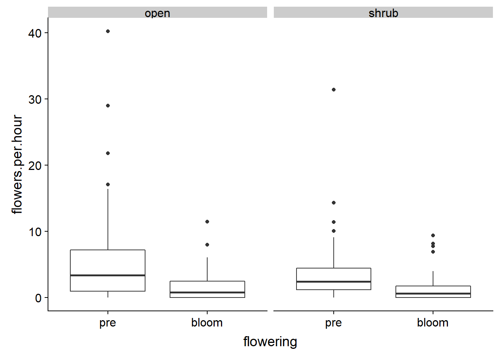
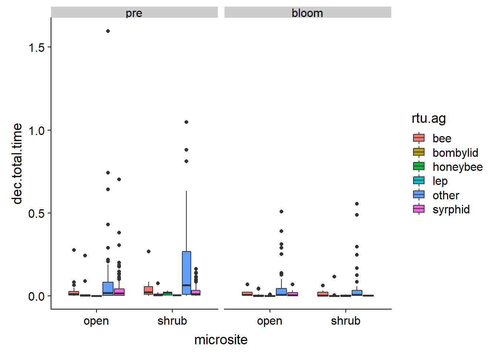

Disentangling the drivers and trade-offs of pollinator-mediated interactions between the foundation shrub Creosote bush (Larrea tridentata) and the annual desert dandelion (Malacothrix glabrata)
Overview
In arid ecosystems shrub facilitation is a critical process driving plant community structure and assembly, which leads to concentrations of annuals beneath the shrub canopies. Pollinator-mediated interactions have fitness consequences for their participants but are a largely unexplored indirect consequence of shrub-annual facilitation. We tested the capacity of the geographically widespread Creosote bush Larrea tridentata to influence the pollination of its annual understory during its phenological shift into spring flowering. In this system, we found that L. tridentata had a positive ecological effect on annual plant cover, as well as the abundance and richness of the arthropod community but that it also had indirect negative effects on pollinator visitation to a representative flowering annual plant which intensified when L. tridentata bloomed. These finding suggest that the net outcome of association with foundation plant species can be positive or negative depending on both the life-history stage of the protégé species tested and on the phenology of the foundation species. There is the capacity for these trade-offs to be widespread and an increasing focus on further documenting these trade-offs will advance both facilitation theory and assessment of selection processes that can drive co-evolutionary relationships between shrubs, annual plants, and pollinators.

Data wrangling and clean up
This section creates several .csv files that get used later for stats
Video data clean up
This section takes the raw datas, wrangles it into three formats, adds covariates and outputs the cleaned data as .csv files which re then sourced in later scripts
#data wrangling for video data
#import datasheets
vids <- read.csv("Clean Data/videos_clean.csv")
IDlist <- read.csv("Clean Data/video_repID.csv")
str(vids)## 'data.frame': 1313 obs. of 23 variables:
## $ Recorder : Factor w/ 6 levels "Brian","Jenna",..: 2 2 2 2 2 2 2 2 2 2 ...
## $ Rep : Factor w/ 13 levels "LO1","LO2","LO3",..: 1 1 1 1 1 1 1 1 1 1 ...
## $ plant.id : Factor w/ 61 levels "104","114","146",..: 3 3 3 3 3 3 3 3 3 3 ...
## $ microsite : Factor w/ 4 levels "open","open ",..: 1 1 1 1 1 1 1 1 1 1 ...
## $ flowering : Factor w/ 6 levels " Bloom"," Bloom ",..: 6 6 6 6 6 6 6 6 6 6 ...
## $ magnet.species : Factor w/ 2 levels "larrea","Larrea": 1 1 1 1 1 1 1 1 1 1 ...
## $ phyto.species : Factor w/ 1 level "malacothrix": 1 1 1 1 1 1 1 1 1 1 ...
## $ video.date : Factor w/ 20 levels "4.10.2017","4.11.2017",..: 1 1 1 1 1 1 1 1 1 1 ...
## $ video.length : Factor w/ 201 levels "0:31:34","0:32:53",..: 105 105 105 105 105 105 105 105 105 105 ...
## $ flower.fov : int 18 18 18 18 18 18 18 18 18 18 ...
## $ visitor.descript : Factor w/ 26 levels "","big!","can see elytra in flight",..: 26 26 1 26 26 26 26 26 26 26 ...
## $ visitor.rtu.original: Factor w/ 118 levels "","?","?little guy",..: 96 96 33 96 96 96 96 96 96 96 ...
## $ highest.rtu : Factor w/ 105 levels "","?","ant","apis mellifera",..: 46 46 69 46 46 46 46 46 46 46 ...
## $ flies.on : Factor w/ 4 levels "","0","N","Y": 4 4 4 4 4 4 4 4 4 4 ...
## $ visitor.behaviour : Factor w/ 304 levels "","*same flower as beetle",..: 20 262 20 262 20 262 262 262 262 262 ...
## $ other.description : Factor w/ 59 levels ""," ","1:06:00",..: 32 1 32 1 31 1 1 1 1 1 ...
## $ start.time : Factor w/ 1153 levels "0:00:00","0:00:02",..: 177 302 326 330 342 408 437 456 460 477 ...
## $ end.time : Factor w/ 1137 levels "","?","0:00:07",..: 157 308 300 374 313 394 417 435 439 447 ...
## $ total.time : Factor w/ 388 levels "#VALUE!","0:00:00",..: 3 110 2 226 3 35 10 40 39 16 ...
## $ flowers.visits : int 0 1 0 2 0 2 1 1 3 1 ...
## $ unique.fl.visited : int 0 1 0 1 0 2 1 1 3 1 ...
## $ X : Factor w/ 164 levels "","0:00:05","0:00:16",..: 1 1 1 1 1 1 1 1 1 1 ...
## $ X.1 : Factor w/ 8 levels "","0:09:29","0:10:39",..: 1 1 1 1 1 1 1 1 1 1 ...#clean up factor names
vids$Rep <- gsub('\\s+', "", vids$Rep)
vids$microsite <- gsub('\\s+', "", vids$microsite)
vids$flowering <- gsub('\\s+', "", vids$flowering)
vids$flowering <-gsub("post", "bloom", vids$flowering)
vids$flowering <-gsub("Bloom", "bloom", vids$flowering)
vids$microsite <-gsub("Shrub", "shrub", vids$microsite)
#check for correc rep info
vids$id.check <- paste(vids$video.date, vids$plant.id, vids$Rep, vids$microsite, vids$flowering)
#need to know how many videos are empty
id.counts <- count(vids, id.check)
sum(id.counts$n)## [1] 1313#subset out floral visits only ie instances where an insect touched a flower. Other insect uses were extracted from videos but not included in analyses
vids$uniID <- paste(vids$Rep, vids$video.date)
vids$uniID <- gsub('\\s+', "", vids$uniID)
#subset flower visits where insect flies on
flr <- filter(vids, flowers.visits != 0 & flies.on == "Y") ## Warning: package 'bindrcpp' was built under R version 3.4.4summary(flr)## Recorder Rep plant.id microsite
## Brian : 49 Length:697 193 : 34 Length:697
## Jenna :527 Class :character 146 : 32 Class :character
## shima : 0 Mode :character 199 : 30 Mode :character
## Shima : 8 268 : 30
## Shobika : 33 192 : 26
## Stephanie: 80 187 : 24
## (Other):521
## flowering magnet.species phyto.species video.date
## Length:697 larrea:648 malacothrix:697 4.10.2017:105
## Class :character Larrea: 49 4.13.2017: 86
## Mode :character 4.12.2017: 66
## 4.15.2017: 48
## 4.16.2017: 48
## 4.11.2017: 47
## (Other) :297
## video.length flower.fov visitor.descript
## 1:20:35: 27 Min. : 4.000 :639
## 1:30:48: 24 1st Qu.: 8.000 yellow faced : 36
## 1:01:09: 20 Median : 9.000 big! : 2
## 1:22:51: 20 Mean : 9.753 metallic : 2
## 1:15:05: 17 3rd Qu.:12.000 orange and black pierdae: 2
## 0:59:46: 15 Max. :21.000 can see elytra in flight: 1
## (Other):574 (Other) : 15
## visitor.rtu.original highest.rtu flies.on
## syrphid :279 syrphid :247 : 0
## small fly?: 64 eupeodes/scaeva: 89 0: 0
## syrphid? : 39 small fly? : 70 N: 0
## fly? : 37 bombylid : 41 Y:697
## tiny black: 37 bee : 36
## bombylid : 29 tiny black : 33
## (Other) :212 (Other) :181
## visitor.behaviour other.description
## :448 :672
## touchdown : 25 flies on : 5
## pollinate : 24 disappears out of sight: 2
## flies on : 12 rewatch : 2
## outside of flower : 10 : 1
## disappears from sight: 9 1:06:00 : 1
## (Other) :169 (Other) : 14
## start.time end.time total.time flowers.visits
## 0:00:00: 9 0:31:33: 3 0:00:01: 74 Min. :1.000
## 0:09:12: 3 0:02:18: 2 0:00:02: 27 1st Qu.:1.000
## 0:10:20: 3 0:03:48: 2 0:00:04: 17 Median :1.000
## 0:20:23: 3 0:06:03: 2 0:00:03: 16 Mean :1.327
## 0:01:46: 2 0:06:49: 2 0:00:14: 15 3rd Qu.:1.000
## 0:03:13: 2 0:07:51: 2 0:00:06: 14 Max. :7.000
## (Other):675 (Other):684 (Other):534
## unique.fl.visited X X.1 id.check
## Min. :1.000 :604 :696 Length:697
## 1st Qu.:1.000 1:06:00: 9 0:09:29: 1 Class :character
## Median :1.000 1:06:01: 3 0:10:39: 0 Mode :character
## Mean :1.281 0:07:09: 2 0:12 : 0
## 3rd Qu.:1.000 0:00:05: 1 0:18:58: 0
## Max. :5.000 0:00:55: 1 1:02:05: 0
## (Other): 77 (Other): 0
## uniID
## Length:697
## Class :character
## Mode :character
##
##
##
## str(flr)## 'data.frame': 697 obs. of 25 variables:
## $ Recorder : Factor w/ 6 levels "Brian","Jenna",..: 2 2 2 2 2 2 2 2 2 2 ...
## $ Rep : chr "LO1" "LO1" "LO1" "LO1" ...
## $ plant.id : Factor w/ 61 levels "104","114","146",..: 3 3 3 3 3 3 3 3 3 3 ...
## $ microsite : chr "open" "open" "open" "open" ...
## $ flowering : chr "pre" "pre" "pre" "pre" ...
## $ magnet.species : Factor w/ 2 levels "larrea","Larrea": 1 1 1 1 1 1 1 1 1 1 ...
## $ phyto.species : Factor w/ 1 level "malacothrix": 1 1 1 1 1 1 1 1 1 1 ...
## $ video.date : Factor w/ 20 levels "4.10.2017","4.11.2017",..: 1 1 1 1 1 1 1 1 1 1 ...
## $ video.length : Factor w/ 201 levels "0:31:34","0:32:53",..: 105 105 105 105 105 105 105 105 105 105 ...
## $ flower.fov : int 18 18 18 18 18 18 18 18 18 18 ...
## $ visitor.descript : Factor w/ 26 levels "","big!","can see elytra in flight",..: 26 26 26 26 26 26 26 26 26 26 ...
## $ visitor.rtu.original: Factor w/ 118 levels "","?","?little guy",..: 96 96 96 96 96 96 96 96 96 96 ...
## $ highest.rtu : Factor w/ 105 levels "","?","ant","apis mellifera",..: 46 46 46 46 46 46 46 46 46 46 ...
## $ flies.on : Factor w/ 4 levels "","0","N","Y": 4 4 4 4 4 4 4 4 4 4 ...
## $ visitor.behaviour : Factor w/ 304 levels "","*same flower as beetle",..: 262 262 262 262 262 262 262 262 262 262 ...
## $ other.description : Factor w/ 59 levels ""," ","1:06:00",..: 1 1 1 1 1 1 1 1 21 1 ...
## $ start.time : Factor w/ 1153 levels "0:00:00","0:00:02",..: 302 330 408 437 456 460 477 482 501 517 ...
## $ end.time : Factor w/ 1137 levels "","?","0:00:07",..: 308 374 394 417 435 439 447 481 465 482 ...
## $ total.time : Factor w/ 388 levels "#VALUE!","0:00:00",..: 110 226 35 10 40 39 16 138 10 16 ...
## $ flowers.visits : int 1 2 2 1 1 3 1 3 1 1 ...
## $ unique.fl.visited : int 1 1 2 1 1 3 1 3 1 1 ...
## $ X : Factor w/ 164 levels "","0:00:05","0:00:16",..: 1 1 1 1 1 1 1 1 1 1 ...
## $ X.1 : Factor w/ 8 levels "","0:09:29","0:10:39",..: 1 1 1 1 1 1 1 1 1 1 ...
## $ id.check : chr "4.10.2017 146 LO1 open pre" "4.10.2017 146 LO1 open pre" "4.10.2017 146 LO1 open pre" "4.10.2017 146 LO1 open pre" ...
## $ uniID : chr "LO14.10.2017" "LO14.10.2017" "LO14.10.2017" "LO14.10.2017" ...#convert time to seconds then decimal time
flr$pos.total.time <- as.POSIXct(strptime(flr$total.time, "%H:%M:%S"))
flr$dec.total.time <- (hour(flr$pos.total.time) * 3600 + minute(flr$pos.total.time) * 60 + second(flr$pos.total.time)) / 3600
flr <- mutate(flr, prop.fl.visited = flowers.visits/flower.fov, prop.un.fl.visited = unique.fl.visited/flower.fov)
counts <- count(flr, uniID)
sum(counts$n)## [1] 697#count(flr, Rep)
#count(flr, uniID)
#make fill ID list
IDlist$uniID <- paste(IDlist$Rep, IDlist$Day)
IDlist$uniID <- gsub('\\s+', "", IDlist$uniID)
#exclude certain reps. The excluded reps are those where the battery ran out or some disturbance occurred
IDlist <- filter(IDlist, Exclude != "Y")
#count visits per rep
counts <- flr %>% group_by(uniID) %>% summarise(total.visits = n())
sum(counts$total.visits)## [1] 697#count the total number of flowers visited per video
count.fl <- flr %>% group_by(uniID) %>% summarise(total.flowers = sum(flowers.visits))
sum(count.fl$total.flowers)## [1] 925#add reps with zero visits. Need to included videos that received no visits
zeros <- anti_join(IDlist, counts, by = "uniID")
all.data <- bind_rows(zeros, counts)
all.data <- dplyr::select(all.data, uniID, total.visits)
#replace NAs with zeros
all.data$total.visits[is.na(all.data$total.visits)] <- 0
sum(all.data$total.visits)## [1] 697#join video length
all.data <- IDlist %>% dplyr::select(Length, uniID) %>% right_join(all.data,., by = "uniID")
#join covariates
cov <- read.csv("Clean Data/video_cov.csv")
str(cov)## 'data.frame': 360 obs. of 14 variables:
## $ PlantID : Factor w/ 121 levels "104","114","146",..: 24 24 25 25 37 37 38 38 61 61 ...
## $ SecondaryID : Factor w/ 2 levels "","na": 2 2 2 2 2 2 2 2 2 2 ...
## $ Cam : Factor w/ 24 levels "BO1","BO2","BO3",..: 7 1 8 2 9 3 10 4 11 5 ...
## $ treatment : Factor w/ 2 levels "open","shrub": 2 1 2 1 2 1 2 1 2 1 ...
## $ flowering : Factor w/ 2 levels "bloom","pre": 2 2 2 2 2 2 2 2 2 2 ...
## $ Date : Factor w/ 20 levels "4.10.2017","4.11.2017",..: 1 1 1 1 1 1 1 1 1 1 ...
## $ TimeOut : Factor w/ 123 levels "","10:48","10:57",..: 53 53 54 54 56 56 55 55 58 58 ...
## $ flowers.shrub : int 0 0 0 0 0 0 0 0 0 0 ...
## $ flowers.pot : Factor w/ 16 levels "10","11","12",..: 16 16 16 16 16 16 5 2 7 6 ...
## $ het.shrub.blooming.neighbours : int 0 0 1 1 5 6 6 5 3 3 ...
## $ het.cactus.blooming.neighbours: int 0 0 0 0 0 0 0 0 0 0 ...
## $ understory.richness : int 5 4 5 2 3 3 5 3 5 3 ...
## $ het.annual.floral.density : int 10 16 29 19 8 18 8 15 4 0 ...
## $ understory.assoc : Factor w/ 21 levels "","?","acamp",..: 11 13 8 13 2 2 18 13 19 13 ...cov$uniID <- paste(cov$Cam, cov$Date)
cov$uniID <- gsub('\\s+', "", cov$uniID)
all.data <- right_join(cov, all.data, by = "uniID")
sum(all.data$total.visits)## [1] 697#convert to decimal time to standardize visits
all.data$pos.Length <- as.POSIXct(strptime(all.data$Length, "%H:%M:%S"))
all.data$dec.Length <- (hour(all.data$pos.Length) * 3600 + minute(all.data$pos.Length) * 60 + second(all.data$pos.Length)) / 3600
#plant visits per hour
all.data <- mutate(all.data, visits.per.hour = total.visits/dec.Length)
sum(all.data$total.visits)## [1] 697#number of flowers visited per hour
all.data <- left_join(all.data, count.fl, by = "uniID")
all.data$total.flowers[is.na(all.data$total.flowers)] <- 0
all.data <- mutate(all.data, flowers.per.hour = total.flowers/dec.Length)
sum(all.data$total.visits)## [1] 697#add weather data
weather <- read.csv("Clean Data/video_weather.csv")
weather.av <- weather %>% group_by(., Date) %>% summarise(., mean.Solar = mean(Solar), mean.Wind = mean(Wind), mean.MaxWind = mean(Max), mean.Temp = mean(Air.Temperature))
all.data <- right_join(weather.av, all.data, by = "Date")
sum(all.data$total.visits)## [1] 697#data aggregrated to replicate
write.csv(all.data, "Output Data/byrep_cleaned.csv")
#data left as individual observations
write.csv(flr, "Output Data/byobs_cleaned.csv")
#I also want a dataframe grouped by rtu: Bees, syrphids, bombyliids, leps and others.
#rtu.key is a table to classify the different rtu in datafile into categories
rtu.key <- read.csv("Clean Data/video_rtu_key.csv")
rtu.data <- left_join(rtu.key, flr, by = "highest.rtu")## Warning: Column `highest.rtu` joining factors with different levels,
## coercing to character vectorrtu.data <- dplyr::select(rtu.data, rtu.ag, plant.id, microsite, flowering, video.date, video.length, flower.fov, total.time, flowers.visits, unique.fl.visited, uniID)
count.rtu.fl <- rtu.data %>% group_by(uniID, rtu.ag) %>% summarise(total.flowers = sum(flowers.visits), total.visits = n())
#add zero rows
#zeros.rtu <- anti_join(IDlist, count.rtu.fl, by = "uniID")
#all.rtu.data <- bind_rows(zeros.rtu, count.rtu.fl)
#all.rtu.data <- dplyr::select(all.rtu.data, uniID, rtu.ag, total.visits, total.flowers)
#need to add the zero count rtu.
#spread, fill in zeros, then gather back
all.rtu.data <- count.rtu.fl
id <- as.data.frame(IDlist$uniID)
id$uniID <- id$`IDlist$uniID`
id <- dplyr::select(id, uniID)
id$syrphid <- 1
id$bee <- 2
id$other <- 3
id$bombylid <- 4
id$lep <- 5
id$honeybee <- 6
id <- gather(id, "rtu", "count", 2:7)
count(id, rtu)## # A tibble: 6 x 2
## rtu n
## <chr> <int>
## 1 bee 235
## 2 bombylid 235
## 3 honeybee 235
## 4 lep 235
## 5 other 235
## 6 syrphid 235id$join <- paste(id$uniID, id$rtu)
id$test <- 1
all.rtu.data$join <- paste(all.rtu.data$uniID, all.rtu.data$rtu.ag)
test <- dplyr::full_join(id, all.rtu.data, by = "join")
all.rtu <- dplyr::select(test, uniID.x, rtu, total.visits, total.flowers)
all.rtu$total.visits[is.na(all.rtu$total.visits)] <- 0
all.rtu$total.flowers[is.na(all.rtu$total.flowers)] <- 0
all.rtu <- dplyr::rename(all.rtu, uniID = uniID.x)
#join video length
all.rtu <- IDlist %>% dplyr::select(Length, uniID) %>% right_join(all.rtu,., by = "uniID")## Warning: Column `uniID` joining factor and character vector, coercing into
## character vector#join covariates
all.rtu <- right_join(cov, all.rtu, by = "uniID")
#convert to decimal time to standardize visits
all.rtu$pos.Length <- as.POSIXct(strptime(all.rtu$Length, "%H:%M:%S"))
all.rtu$dec.Length <- (hour(all.rtu$pos.Length) * 3600 + minute(all.rtu$pos.Length) * 60 + second(all.rtu$pos.Length)) / 3600
#plant visits per hour
all.rtu <- mutate(all.rtu, visits.per.hour = total.visits/dec.Length)
all.rtu <- mutate(all.rtu, flowers.per.hour = total.flowers/dec.Length)
all.rtu <- dplyr::select(all.rtu, -SecondaryID, -Cam)
#output rtu level observations (ag. by replicate)
write.csv(all.rtu, "Output Data/rtu_by_rep.csv")Pan trap data wrangling
This sections takes the long format ID sheet (pantrap_id.csv), converts it into wide format that vegan can use, and outputs the cleaned data as .csv to be sourced in later scripts
#by rep
#need new simplified key to reflect species additions
long <- read.csv("Clean Data/pantraps_ID.csv")
long$highest.rtu <- gsub(" ","", long$highest.rtu)
sum(long$Quantity)## [1] 3400#sp.key <- read.csv("Clean Data/species_key.csv")
long$Microsite <- gsub(" ","", long$Microsite)
long$uniID <- paste(long$Date, long$PlantID, long$Microsite)
#long <- inner_join(long, sp.key, by = "highest.rtu")
#for pinned specimens need to collapse & add up the Quantity
long.fil <- dplyr::select(long, uniID, highest.rtu, Quantity)
long.ag <- long.fil %>% group_by(uniID, highest.rtu) %>% summarise(Quantity = sum(Quantity))
sum(long.ag$Quantity)## [1] 3400counts <- long.ag %>% group_by(highest.rtu) %>% summarise(Quantity = sum(Quantity))
count(long.ag, highest.rtu)## # A tibble: 1,633 x 3
## # Groups: uniID [228]
## uniID highest.rtu n
## <chr> <chr> <int>
## 1 4.10.2017 184 open Cicadellidae 1
## 2 4.10.2017 184 open Eupeodesvolucris 1
## 3 4.10.2017 184 open Melyridae 1
## 4 4.10.2017 184 open Mythicomyiidae 1
## 5 4.10.2017 184 open Sciaridae 1
## 6 4.10.2017 184 open Usiinae 1
## 7 4.10.2017 184 shrub Anthidium 1
## 8 4.10.2017 184 shrub Chrysomelidae 1
## 9 4.10.2017 184 shrub Cicadellidae 1
## 10 4.10.2017 184 shrub Lasioglossum 1
## # ... with 1,623 more rows#count number of specimens of each rtu and write to a table
sp_by_rep <- long %>% group_by(highest.rtu) %>% summarise(Quantity = sum(Quantity))
write.csv(sp_by_rep, "Output Data/pans_sp_by_rep.csv")
#output in long format
write.csv(long.ag, "Output Data/pantraps_long.csv")
#spread into wide format for vegan calculations
wide <- long.ag %>% spread(highest.rtu, Quantity)
#not including damaged specimens in analyses
wide <- dplyr::select(wide, -damaged, -destroyed)
#need to replace all 0 in data frame
wide[is.na(wide)] <- 0
write.csv(wide, "Output Data/pantraps_wide.csv")Pan trap diversity calculations
This sections calculates diversity indices and exports full env/metadata .csv
Calculations excluding Melyrid beetles
insects <- read.csv("Output Data/pantraps_wide.csv", header = TRUE)
row.names(insects) <- insects$uniID
insects <- dplyr::select(insects, -X, -uniID)
#filter out Melyrid beetles
insects <- dplyr::select(insects, -Melyridae)
metadata <- read.csv("Clean Data/pantraps_cov.csv", header = TRUE)
metadata <- filter(metadata, species != "buckhorn")
metadata$plant.id <- as.character(metadata$plant.id)
str(metadata)## 'data.frame': 228 obs. of 9 variables:
## $ plant.id : chr "296" "296" "189" "189" ...
## $ species : Factor w/ 2 levels "buckhorn","larrea": 2 2 2 2 2 2 2 2 2 2 ...
## $ treatment : Factor w/ 2 levels "open","shrub": 2 1 2 1 2 1 2 1 2 1 ...
## $ blooming : Factor w/ 2 levels "post","pre": 2 2 2 2 2 2 2 2 2 2 ...
## $ date : Factor w/ 21 levels "4.10.2017","4.11.2017",..: 1 1 1 1 1 1 1 1 1 1 ...
## $ percent.cover: int 15 3 25 2 40 15 40 3 70 10 ...
## $ rich : int 3 3 6 6 1 3 3 2 3 4 ...
## $ perennial : Factor w/ 5 levels "","1","2","3",..: 1 1 1 1 1 1 1 1 1 1 ...
## $ X : Factor w/ 6 levels "","blue and white knocked over",..: 1 1 1 1 1 1 1 1 1 1 ...metadata$uniID <- paste(metadata$date, metadata$plant.id, metadata$treatment)
row.names(metadata) <- metadata$uniID
#check all ids in datasheets are found in the other
#zero.row <- anti_join(metadata, insects, by = "uniID")
#missing <- anti_join(insects, metadata, by = "uniID")
#write.csv(zero.row, "zeroreps.csv")
#check if insects and metadata are the same
all.equal(rownames(insects), rownames(metadata))## [1] "214 string mismatches"#sort into the same order
metadata <- metadata[rownames(insects), ]
#confirm - woo!
all.equal(rownames(insects), rownames(metadata))## [1] TRUE#grab and wrangle weather stn data
weather <- read.csv("Clean Data/pantraps_weather.csv")
str(weather)## 'data.frame': 152 obs. of 12 variables:
## $ date : Factor w/ 19 levels "4.10.2017","4.11.2017",..: 1 2 3 4 5 6 7 8 9 10 ...
## $ Hour : Factor w/ 8 levels "1:00 PM","10:00 AM",..: 2 2 2 2 2 2 2 2 2 2 ...
## $ Solar : num 0.81 0.79 0.8 0.81 0.81 0.8 0.63 0.82 0.84 0.76 ...
## $ Wind : num 3.9 4.1 5.1 4.9 4.5 3.2 3.3 4.3 4.6 4.7 ...
## $ Max : num 9 10.7 9.7 8.6 7.8 7.6 7.2 8.2 8.2 8.2 ...
## $ Air.Temperature : num 15 15.6 16.9 18.5 19.8 21 21.1 20.7 20.2 18.8 ...
## $ Soil.Temperature: num 18.9 18.8 18.7 18.8 19 19.3 19.8 20.4 21 21.5 ...
## $ Humidity : int 43 42 38 32 29 27 26 26 26 25 ...
## $ Dew : num 2.4 2.6 2.4 1.7 1.4 1.1 1.1 0.8 -0.1 -1.6 ...
## $ Wet : num 8.2 8.6 9.1 9.5 9.9 10.3 10.3 10 9.5 8.5 ...
## $ Baro. : int 873 873 873 873 872 872 872 872 871 871 ...
## $ Total : int 0 0 0 0 0 0 0 0 0 0 ...weather.av <- weather %>% group_by(., date) %>% summarise(., mean.Solar = mean(Solar), mean.Wind = mean(Wind), mean.MaxWind = mean(Max), mean.Temp = mean(Air.Temperature))
metadata <- right_join(weather.av, metadata, by = "date")## Warning: Column `date` joining factors with different levels, coercing to
## character vector#calculate abundances using vegan
metadata$abun <- apply(insects, 1, sum)
#check for total
sum(metadata$abun)## [1] 2144H <- diversity(insects)
simp <- diversity(insects, "simpson")
S <- specnumber(insects)
J <- H/log(S)
metadata$H <- H
metadata$Simpson <- simp
metadata$Species <- S
metadata$Even <- J
summary(metadata)## date mean.Solar mean.Wind mean.MaxWind
## Length:228 Min. :0.5737 Min. :3.525 Min. : 9.238
## Class :character 1st Qu.:0.6663 1st Qu.:4.787 1st Qu.: 9.625
## Mode :character Median :0.7688 Median :5.175 Median :10.050
## Mean :0.7419 Mean :5.241 Mean :10.184
## 3rd Qu.:0.7987 3rd Qu.:6.025 3rd Qu.:10.512
## Max. :0.8125 Max. :6.662 Max. :11.537
##
## mean.Temp plant.id species treatment blooming
## Min. :17.16 Length:228 buckhorn: 0 open :114 post:120
## 1st Qu.:17.40 Class :character larrea :228 shrub:114 pre :108
## Median :17.86 Mode :character
## Mean :18.46
## 3rd Qu.:18.56
## Max. :28.51
##
## percent.cover rich perennial
## Min. : 1.00 Min. :1.00 :223
## 1st Qu.: 2.00 1st Qu.:2.00 1 : 4
## Median :10.00 Median :3.00 2 : 1
## Mean :18.82 Mean :3.25 3 : 0
## 3rd Qu.:30.00 3rd Qu.:4.00 east: 0
## Max. :80.00 Max. :8.00
##
## X uniID abun
## :227 Length:228 Min. : 0.000
## blue and white knocked over: 1 Class :character 1st Qu.: 5.000
## east : 0 Mode :character Median : 9.000
## east side : 0 Mean : 9.404
## north : 0 3rd Qu.:12.000
## yellow knocked over : 0 Max. :30.000
##
## H Simpson Species Even
## Min. :0.000 Min. :0.0000 Min. : 0.000 Min. :0.0000
## 1st Qu.:1.332 1st Qu.:0.7321 1st Qu.: 4.000 1st Qu.:0.9138
## Median :1.748 Median :0.8056 Median : 6.000 Median :0.9577
## Mean :1.582 Mean :0.7568 Mean : 6.241 Mean :0.9104
## 3rd Qu.:1.994 3rd Qu.:0.8571 3rd Qu.: 8.000 3rd Qu.:0.9821
## Max. :2.476 Max. :1.0000 Max. :15.000 Max. :1.0000
## NA's :6#no Melyrid beetle output
write.csv(metadata, "Output Data/metadata_nobeetle.csv")
write.csv(insects, "Output Data/wide_nobeetle.csv")Calculations including Melyrid beetles
#with beetles
insects <- read.csv("Output Data/pantraps_wide.csv", header = TRUE)
row.names(insects) <- insects$uniID
insects <- dplyr::select(insects, -X, -uniID, -Zeroes)
#filter out beetles
#insects <- dplyr::select(insects, -Melyridae, -Melyridae.)
metadata <- read.csv("Clean Data/pantraps_cov.csv", header = TRUE)
metadata <- filter(metadata, species != "buckhorn")
metadata$plant.id <- as.character(metadata$plant.id)
str(metadata)## 'data.frame': 228 obs. of 9 variables:
## $ plant.id : chr "296" "296" "189" "189" ...
## $ species : Factor w/ 2 levels "buckhorn","larrea": 2 2 2 2 2 2 2 2 2 2 ...
## $ treatment : Factor w/ 2 levels "open","shrub": 2 1 2 1 2 1 2 1 2 1 ...
## $ blooming : Factor w/ 2 levels "post","pre": 2 2 2 2 2 2 2 2 2 2 ...
## $ date : Factor w/ 21 levels "4.10.2017","4.11.2017",..: 1 1 1 1 1 1 1 1 1 1 ...
## $ percent.cover: int 15 3 25 2 40 15 40 3 70 10 ...
## $ rich : int 3 3 6 6 1 3 3 2 3 4 ...
## $ perennial : Factor w/ 5 levels "","1","2","3",..: 1 1 1 1 1 1 1 1 1 1 ...
## $ X : Factor w/ 6 levels "","blue and white knocked over",..: 1 1 1 1 1 1 1 1 1 1 ...metadata$uniID <- paste(metadata$date, metadata$plant.id, metadata$treatment)
row.names(metadata) <- metadata$uniID
#check all ids in datasheets are found in the other
#zero.row <- anti_join(metadata, insects, by = "uniID")
#missing <- anti_join(insects, metadata, by = "uniID")
#write.csv(zero.row, "zeroreps.csv")
#check if insects and metadata are the same
all.equal(rownames(insects), rownames(metadata))## [1] "214 string mismatches"#sort into the same order
metadata <- metadata[rownames(insects), ]
#confirm - woo!
all.equal(rownames(insects), rownames(metadata))## [1] TRUE#grab and wrangle weather stn data
weather <- read.csv("Clean Data/pantraps_weather.csv")
str(weather)## 'data.frame': 152 obs. of 12 variables:
## $ date : Factor w/ 19 levels "4.10.2017","4.11.2017",..: 1 2 3 4 5 6 7 8 9 10 ...
## $ Hour : Factor w/ 8 levels "1:00 PM","10:00 AM",..: 2 2 2 2 2 2 2 2 2 2 ...
## $ Solar : num 0.81 0.79 0.8 0.81 0.81 0.8 0.63 0.82 0.84 0.76 ...
## $ Wind : num 3.9 4.1 5.1 4.9 4.5 3.2 3.3 4.3 4.6 4.7 ...
## $ Max : num 9 10.7 9.7 8.6 7.8 7.6 7.2 8.2 8.2 8.2 ...
## $ Air.Temperature : num 15 15.6 16.9 18.5 19.8 21 21.1 20.7 20.2 18.8 ...
## $ Soil.Temperature: num 18.9 18.8 18.7 18.8 19 19.3 19.8 20.4 21 21.5 ...
## $ Humidity : int 43 42 38 32 29 27 26 26 26 25 ...
## $ Dew : num 2.4 2.6 2.4 1.7 1.4 1.1 1.1 0.8 -0.1 -1.6 ...
## $ Wet : num 8.2 8.6 9.1 9.5 9.9 10.3 10.3 10 9.5 8.5 ...
## $ Baro. : int 873 873 873 873 872 872 872 872 871 871 ...
## $ Total : int 0 0 0 0 0 0 0 0 0 0 ...weather.av <- weather %>% group_by(., date) %>% summarise(., mean.Solar = mean(Solar), mean.Wind = mean(Wind), mean.MaxWind = mean(Max), mean.Temp = mean(Air.Temperature))
metadata <- right_join(weather.av, metadata, by = "date")## Warning: Column `date` joining factors with different levels, coercing to
## character vectormetadata$abun <- apply(insects, 1, sum)
#check for total
sum(metadata$abun)## [1] 3387H <- diversity(insects)
simp <- diversity(insects, "simpson")
S <- specnumber(insects)
J <- H/log(S)
metadata$H <- H
metadata$Simpson <- simp
metadata$Species <- S
metadata$Even <- J
summary(metadata)## date mean.Solar mean.Wind mean.MaxWind
## Length:228 Min. :0.5737 Min. :3.525 Min. : 9.238
## Class :character 1st Qu.:0.6663 1st Qu.:4.787 1st Qu.: 9.625
## Mode :character Median :0.7688 Median :5.175 Median :10.050
## Mean :0.7419 Mean :5.241 Mean :10.184
## 3rd Qu.:0.7987 3rd Qu.:6.025 3rd Qu.:10.512
## Max. :0.8125 Max. :6.662 Max. :11.537
##
## mean.Temp plant.id species treatment blooming
## Min. :17.16 Length:228 buckhorn: 0 open :114 post:120
## 1st Qu.:17.40 Class :character larrea :228 shrub:114 pre :108
## Median :17.86 Mode :character
## Mean :18.46
## 3rd Qu.:18.56
## Max. :28.51
##
## percent.cover rich perennial
## Min. : 1.00 Min. :1.00 :223
## 1st Qu.: 2.00 1st Qu.:2.00 1 : 4
## Median :10.00 Median :3.00 2 : 1
## Mean :18.82 Mean :3.25 3 : 0
## 3rd Qu.:30.00 3rd Qu.:4.00 east: 0
## Max. :80.00 Max. :8.00
##
## X uniID abun
## :227 Length:228 Min. : 0.00
## blue and white knocked over: 1 Class :character 1st Qu.:10.00
## east : 0 Mode :character Median :14.00
## east side : 0 Mean :14.86
## north : 0 3rd Qu.:19.00
## yellow knocked over : 0 Max. :55.00
##
## H Simpson Species Even
## Min. :0.000 Min. :0.0000 Min. : 0.000 Min. :0.0000
## 1st Qu.:1.233 1st Qu.:0.6239 1st Qu.: 5.000 1st Qu.:0.7950
## Median :1.699 Median :0.7769 Median : 7.000 Median :0.8842
## Mean :1.569 Mean :0.7034 Mean : 7.096 Mean :0.8413
## 3rd Qu.:1.991 3rd Qu.:0.8336 3rd Qu.: 9.000 3rd Qu.:0.9464
## Max. :2.552 Max. :1.0000 Max. :16.000 Max. :1.0000
## NA's :6#beetle output
write.csv(metadata, "Output Data/metadata_yesbeetle.csv")
write.csv(insects, "Output Data/wide_yesbeetle.csv")Calculations for only Melyrid beetles
##beetles only
insects <- read.csv("Output Data/pantraps_wide.csv", header = TRUE)
row.names(insects) <- insects$uniID
insects <- dplyr::select(insects, -X, -uniID)
#filter out beetles
insects <- dplyr::select(insects, Melyridae)
metadata <- read.csv("Clean Data/pantraps_cov.csv", header = TRUE)
metadata <- filter(metadata, species != "buckhorn")
metadata$plant.id <- as.character(metadata$plant.id)
str(metadata)## 'data.frame': 228 obs. of 9 variables:
## $ plant.id : chr "296" "296" "189" "189" ...
## $ species : Factor w/ 2 levels "buckhorn","larrea": 2 2 2 2 2 2 2 2 2 2 ...
## $ treatment : Factor w/ 2 levels "open","shrub": 2 1 2 1 2 1 2 1 2 1 ...
## $ blooming : Factor w/ 2 levels "post","pre": 2 2 2 2 2 2 2 2 2 2 ...
## $ date : Factor w/ 21 levels "4.10.2017","4.11.2017",..: 1 1 1 1 1 1 1 1 1 1 ...
## $ percent.cover: int 15 3 25 2 40 15 40 3 70 10 ...
## $ rich : int 3 3 6 6 1 3 3 2 3 4 ...
## $ perennial : Factor w/ 5 levels "","1","2","3",..: 1 1 1 1 1 1 1 1 1 1 ...
## $ X : Factor w/ 6 levels "","blue and white knocked over",..: 1 1 1 1 1 1 1 1 1 1 ...metadata$uniID <- paste(metadata$date, metadata$plant.id, metadata$treatment)
row.names(metadata) <- metadata$uniID
#check if insects and metadata are the same
all.equal(rownames(insects), rownames(metadata))## [1] "214 string mismatches"#sort into the same order
metadata <- metadata[rownames(insects), ]
#confirm - woo!
all.equal(rownames(insects), rownames(metadata))## [1] TRUE#grab and wrangle weather stn data
weather <- read.csv("Clean Data/pantraps_weather.csv")
str(weather)## 'data.frame': 152 obs. of 12 variables:
## $ date : Factor w/ 19 levels "4.10.2017","4.11.2017",..: 1 2 3 4 5 6 7 8 9 10 ...
## $ Hour : Factor w/ 8 levels "1:00 PM","10:00 AM",..: 2 2 2 2 2 2 2 2 2 2 ...
## $ Solar : num 0.81 0.79 0.8 0.81 0.81 0.8 0.63 0.82 0.84 0.76 ...
## $ Wind : num 3.9 4.1 5.1 4.9 4.5 3.2 3.3 4.3 4.6 4.7 ...
## $ Max : num 9 10.7 9.7 8.6 7.8 7.6 7.2 8.2 8.2 8.2 ...
## $ Air.Temperature : num 15 15.6 16.9 18.5 19.8 21 21.1 20.7 20.2 18.8 ...
## $ Soil.Temperature: num 18.9 18.8 18.7 18.8 19 19.3 19.8 20.4 21 21.5 ...
## $ Humidity : int 43 42 38 32 29 27 26 26 26 25 ...
## $ Dew : num 2.4 2.6 2.4 1.7 1.4 1.1 1.1 0.8 -0.1 -1.6 ...
## $ Wet : num 8.2 8.6 9.1 9.5 9.9 10.3 10.3 10 9.5 8.5 ...
## $ Baro. : int 873 873 873 873 872 872 872 872 871 871 ...
## $ Total : int 0 0 0 0 0 0 0 0 0 0 ...weather.av <- weather %>% group_by(., date) %>% summarise(., mean.Solar = mean(Solar), mean.Wind = mean(Wind), mean.MaxWind = mean(Max), mean.Temp = mean(Air.Temperature))
metadata <- right_join(weather.av, metadata, by = "date")## Warning: Column `date` joining factors with different levels, coercing to
## character vectormetadata$abun <- apply(insects, 1, sum)
#check for total
sum(metadata$abun)## [1] 1243H <- diversity(insects)
simp <- diversity(insects, "simpson")
S <- specnumber(insects)
J <- H/log(S)
metadata$H <- H
metadata$Simpson <- simp
metadata$Species <- S
metadata$Even <- J
summary(metadata)## date mean.Solar mean.Wind mean.MaxWind
## Length:228 Min. :0.5737 Min. :3.525 Min. : 9.238
## Class :character 1st Qu.:0.6663 1st Qu.:4.787 1st Qu.: 9.625
## Mode :character Median :0.7688 Median :5.175 Median :10.050
## Mean :0.7419 Mean :5.241 Mean :10.184
## 3rd Qu.:0.7987 3rd Qu.:6.025 3rd Qu.:10.512
## Max. :0.8125 Max. :6.662 Max. :11.537
## mean.Temp plant.id species treatment blooming
## Min. :17.16 Length:228 buckhorn: 0 open :114 post:120
## 1st Qu.:17.40 Class :character larrea :228 shrub:114 pre :108
## Median :17.86 Mode :character
## Mean :18.46
## 3rd Qu.:18.56
## Max. :28.51
## percent.cover rich perennial
## Min. : 1.00 Min. :1.00 :223
## 1st Qu.: 2.00 1st Qu.:2.00 1 : 4
## Median :10.00 Median :3.00 2 : 1
## Mean :18.82 Mean :3.25 3 : 0
## 3rd Qu.:30.00 3rd Qu.:4.00 east: 0
## Max. :80.00 Max. :8.00
## X uniID abun
## :227 Length:228 Min. : 0.000
## blue and white knocked over: 1 Class :character 1st Qu.: 1.750
## east : 0 Mode :character Median : 4.000
## east side : 0 Mean : 5.452
## north : 0 3rd Qu.: 7.000
## yellow knocked over : 0 Max. :46.000
## H Simpson Species Even
## Min. :4.908 Min. :0.9899 Min. :0.0000 Min. : 0
## 1st Qu.:4.908 1st Qu.:0.9899 1st Qu.:1.0000 1st Qu.:Inf
## Median :4.908 Median :0.9899 Median :1.0000 Median :Inf
## Mean :4.908 Mean :0.9899 Mean :0.8553 Mean :Inf
## 3rd Qu.:4.908 3rd Qu.:0.9899 3rd Qu.:1.0000 3rd Qu.:Inf
## Max. :4.908 Max. :0.9899 Max. :1.0000 Max. :Inf#no beetle output
write.csv(metadata, "Output Data/metadata_onlybeetle.csv")
write.csv(insects, "Output Data/wide_onlybeetle.csv")Statistics and modelling
Visitation and pollen deposition
Visitation modelling
Hypothesis testing for visitation. GLMM are computationally difficult so workflow is: Base hypothesis model to test for additive vs. interactive effects of predictors. Then add each covariate the best base model. RTU specific responses require a different dataframe so those analyses are done separately. Very full models are not tractable. AllFit.R started throwing an error so moving from lme4 to glmmTMBB. Support for car::Anova in glmmTMB is in the development version.
byrep <- read.csv("Output Data/byrep_cleaned.csv")
byrep$repID <- paste(byrep$PlantID, byrep$treatment)
byrep$treatment <- relevel(byrep$treatment, "open")
byrep$flowering <- relevel(byrep$flowering, "pre")
#calculate mean video length
mean(byrep$dec.Length)## [1] 1.324978#calculate total flower visits and total foraging instances
sum(byrep$total.flowers)## [1] 925sum(byrep$total.visits)## [1] 697#should be 925 and 697 - not 930 and 701.#base hypothesis testing model
#additive
m1 <- glmmTMB(total.flowers ~ treatment + flowering + flowers.pot + offset(log(dec.Length)) + (1|repID), family = "nbinom2", data = byrep)
summary(m1)## Family: nbinom2 ( log )
## Formula:
## total.flowers ~ treatment + flowering + flowers.pot + offset(log(dec.Length)) +
## (1 | repID)
## Data: byrep
##
## AIC BIC logLik deviance df.resid
## 1111.4 1132.2 -549.7 1099.4 229
##
## Random effects:
##
## Conditional model:
## Groups Name Variance Std.Dev.
## repID (Intercept) 0.1137 0.3372
## Number of obs: 235, groups: repID, 122
##
## Overdispersion parameter for nbinom2 family (): 1.03
##
## Conditional model:
## Estimate Std. Error z value Pr(>|z|)
## (Intercept) 0.99295 0.28935 3.432 0.00060 ***
## treatmentshrub -0.35032 0.16682 -2.100 0.03573 *
## floweringbloom -1.25514 0.16057 -7.817 5.41e-15 ***
## flowers.pot 0.06992 0.02667 2.622 0.00874 **
## ---
## Signif. codes: 0 '***' 0.001 '**' 0.01 '*' 0.05 '.' 0.1 ' ' 1plot(residuals(m1)~predict(m1))
car::Anova(m1, type = 2)## Analysis of Deviance Table (Type II Wald chisquare tests)
##
## Response: total.flowers
## Chisq Df Pr(>Chisq)
## treatment 4.4102 1 0.035726 *
## flowering 61.1040 1 5.414e-15 ***
## flowers.pot 6.8749 1 0.008742 **
## ---
## Signif. codes: 0 '***' 0.001 '**' 0.01 '*' 0.05 '.' 0.1 ' ' 1#interactive model
m2 <- glmmTMB(total.flowers ~ treatment * flowering + flowers.pot + offset(log(dec.Length)) + (1|repID), family = "nbinom2", data = byrep)
summary(m2)## Family: nbinom2 ( log )
## Formula:
## total.flowers ~ treatment * flowering + flowers.pot + offset(log(dec.Length)) +
## (1 | repID)
## Data: byrep
##
## AIC BIC logLik deviance df.resid
## 1113.4 1137.6 -549.7 1099.4 228
##
## Random effects:
##
## Conditional model:
## Groups Name Variance Std.Dev.
## repID (Intercept) 0.1117 0.3343
## Number of obs: 235, groups: repID, 122
##
## Overdispersion parameter for nbinom2 family (): 1.03
##
## Conditional model:
## Estimate Std. Error z value Pr(>|z|)
## (Intercept) 1.00505 0.29862 3.366 0.000764 ***
## treatmentshrub -0.37412 0.22063 -1.696 0.089950 .
## floweringbloom -1.27990 0.22004 -5.817 6.01e-09 ***
## flowers.pot 0.06994 0.02666 2.623 0.008705 **
## treatmentshrub:floweringbloom 0.05186 0.31483 0.165 0.869158
## ---
## Signif. codes: 0 '***' 0.001 '**' 0.01 '*' 0.05 '.' 0.1 ' ' 1car::Anova(m2, type =3)## Analysis of Deviance Table (Type III Wald chisquare tests)
##
## Response: total.flowers
## Chisq Df Pr(>Chisq)
## (Intercept) 11.3275 1 0.0007637 ***
## treatment 2.8753 1 0.0899499 .
## flowering 33.8324 1 6.007e-09 ***
## flowers.pot 6.8823 1 0.0087051 **
## treatment:flowering 0.0271 1 0.8691580
## ---
## Signif. codes: 0 '***' 0.001 '**' 0.01 '*' 0.05 '.' 0.1 ' ' 1null <- glmmTMB(total.flowers ~ flowers.pot + offset(log(dec.Length)) + (1|repID), family = "nbinom2", data = byrep)
summary(null)## Family: nbinom2 ( log )
## Formula:
## total.flowers ~ flowers.pot + offset(log(dec.Length)) + (1 | repID)
## Data: byrep
##
## AIC BIC logLik deviance df.resid
## 1164.4 1178.2 -578.2 1156.4 231
##
## Random effects:
##
## Conditional model:
## Groups Name Variance Std.Dev.
## repID (Intercept) 0.1149 0.339
## Number of obs: 235, groups: repID, 122
##
## Overdispersion parameter for nbinom2 family (): 0.702
##
## Conditional model:
## Estimate Std. Error z value Pr(>|z|)
## (Intercept) 0.78311 0.31030 2.524 0.0116 *
## flowers.pot 0.02793 0.02943 0.949 0.3425
## ---
## Signif. codes: 0 '***' 0.001 '**' 0.01 '*' 0.05 '.' 0.1 ' ' 1anova(m1,m2, null)## Data: byrep
## Models:
## null: total.flowers ~ flowers.pot + offset(log(dec.Length)) + (1 | , zi=~0, disp=~1
## null: repID), zi=~0, disp=~1
## m1: total.flowers ~ treatment + flowering + flowers.pot + offset(log(dec.Length)) + , zi=~0, disp=~1
## m1: (1 | repID), zi=~0, disp=~1
## m2: total.flowers ~ treatment * flowering + flowers.pot + offset(log(dec.Length)) + , zi=~0, disp=~1
## m2: (1 | repID), zi=~0, disp=~1
## Df AIC BIC logLik deviance Chisq Chi Df Pr(>Chisq)
## null 4 1164.4 1178.2 -578.20 1156.4
## m1 6 1111.4 1132.2 -549.71 1099.4 56.9782 2 4.24e-13 ***
## m2 7 1113.4 1137.6 -549.69 1099.4 0.0271 1 0.8691
## ---
## Signif. codes: 0 '***' 0.001 '**' 0.01 '*' 0.05 '.' 0.1 ' ' 1AIC(m1,m2, null)## df AIC
## m1 6 1111.414
## m2 7 1113.387
## null 4 1164.392car::Anova(m2, type = 3)## Analysis of Deviance Table (Type III Wald chisquare tests)
##
## Response: total.flowers
## Chisq Df Pr(>Chisq)
## (Intercept) 11.3275 1 0.0007637 ***
## treatment 2.8753 1 0.0899499 .
## flowering 33.8324 1 6.007e-09 ***
## flowers.pot 6.8823 1 0.0087051 **
## treatment:flowering 0.0271 1 0.8691580
## ---
## Signif. codes: 0 '***' 0.001 '**' 0.01 '*' 0.05 '.' 0.1 ' ' 1#model 1 is best fitmodeling foraging instances
#base additive model
m3 <- glmmTMB(total.visits ~ treatment + flowering + flowers.pot + offset(log(dec.Length)) + (1|repID), family = "nbinom2", data = byrep)
summary(m3)## Family: nbinom2 ( log )
## Formula:
## total.visits ~ treatment + flowering + flowers.pot + offset(log(dec.Length)) +
## (1 | repID)
## Data: byrep
##
## AIC BIC logLik deviance df.resid
## 1000.7 1021.5 -494.4 988.7 229
##
## Random effects:
##
## Conditional model:
## Groups Name Variance Std.Dev.
## repID (Intercept) 0.04312 0.2077
## Number of obs: 235, groups: repID, 122
##
## Overdispersion parameter for nbinom2 family (): 1.48
##
## Conditional model:
## Estimate Std. Error z value Pr(>|z|)
## (Intercept) 0.96725 0.25551 3.786 0.000153 ***
## treatmentshrub -0.32818 0.14497 -2.264 0.023586 *
## floweringbloom -1.25629 0.14367 -8.744 < 2e-16 ***
## flowers.pot 0.04757 0.02351 2.024 0.043005 *
## ---
## Signif. codes: 0 '***' 0.001 '**' 0.01 '*' 0.05 '.' 0.1 ' ' 1car::Anova(m3, type = 2)## Analysis of Deviance Table (Type II Wald chisquare tests)
##
## Response: total.visits
## Chisq Df Pr(>Chisq)
## treatment 5.1248 1 0.02359 *
## flowering 76.4608 1 < 2e-16 ***
## flowers.pot 4.0952 1 0.04301 *
## ---
## Signif. codes: 0 '***' 0.001 '**' 0.01 '*' 0.05 '.' 0.1 ' ' 1#base interactive model
m5 <- glmmTMB(total.visits ~ treatment * flowering + flowers.pot + offset(log(dec.Length)) + (1|repID), family = "nbinom2", data = byrep)
summary(m5)## Family: nbinom2 ( log )
## Formula:
## total.visits ~ treatment * flowering + flowers.pot + offset(log(dec.Length)) +
## (1 | repID)
## Data: byrep
##
## AIC BIC logLik deviance df.resid
## 1002.7 1026.9 -494.3 988.7 228
##
## Random effects:
##
## Conditional model:
## Groups Name Variance Std.Dev.
## repID (Intercept) 0.04251 0.2062
## Number of obs: 235, groups: repID, 122
##
## Overdispersion parameter for nbinom2 family (): 1.48
##
## Conditional model:
## Estimate Std. Error z value Pr(>|z|)
## (Intercept) 0.97521 0.26277 3.711 0.000206 ***
## treatmentshrub -0.34375 0.18777 -1.831 0.067146 .
## floweringbloom -1.27368 0.19603 -6.497 8.17e-11 ***
## flowers.pot 0.04755 0.02351 2.023 0.043085 *
## treatmentshrub:floweringbloom 0.03680 0.28188 0.131 0.896131
## ---
## Signif. codes: 0 '***' 0.001 '**' 0.01 '*' 0.05 '.' 0.1 ' ' 1car::Anova(m5, type = 3)## Analysis of Deviance Table (Type III Wald chisquare tests)
##
## Response: total.visits
## Chisq Df Pr(>Chisq)
## (Intercept) 13.7732 1 0.0002063 ***
## treatment 3.3514 1 0.0671465 .
## flowering 42.2157 1 8.174e-11 ***
## flowers.pot 4.0921 1 0.0430849 *
## treatment:flowering 0.0170 1 0.8961310
## ---
## Signif. codes: 0 '***' 0.001 '**' 0.01 '*' 0.05 '.' 0.1 ' ' 1#null model
null <- glmmTMB(total.visits ~ flowers.pot + offset(log(dec.Length)) + (1|repID), family = "nbinom2", data = byrep)
anova(m3,m5, null)## Data: byrep
## Models:
## null: total.visits ~ flowers.pot + offset(log(dec.Length)) + (1 | repID), zi=~0, disp=~1
## m3: total.visits ~ treatment + flowering + flowers.pot + offset(log(dec.Length)) + , zi=~0, disp=~1
## m3: (1 | repID), zi=~0, disp=~1
## m5: total.visits ~ treatment * flowering + flowers.pot + offset(log(dec.Length)) + , zi=~0, disp=~1
## m5: (1 | repID), zi=~0, disp=~1
## Df AIC BIC logLik deviance Chisq Chi Df Pr(>Chisq)
## null 4 1066.0 1079.8 -528.98 1057.95
## m3 6 1000.7 1021.5 -494.35 988.70 69.251 2 9.17e-16 ***
## m5 7 1002.7 1026.9 -494.34 988.69 0.017 1 0.8961
## ---
## Signif. codes: 0 '***' 0.001 '**' 0.01 '*' 0.05 '.' 0.1 ' ' 1AIC(m3, m5, null)## df AIC
## m3 6 1000.704
## m5 7 1002.687
## null 4 1065.955ggplot(byrep, aes(flowering, flowers.per.hour)) + geom_boxplot() + facet_grid(~treatment) #testing importance of covariates using TMB because glmer will not coverge. Choosing family:
c1 <- glmmTMB(total.flowers ~ treatment + flowering + flowers.pot + understory.richness+ offset(log(dec.Length)) + (1|repID), family = "nbinom2", data = byrep)
summary(c1)## Family: nbinom2 ( log )
## Formula:
## total.flowers ~ treatment + flowering + flowers.pot + understory.richness +
## offset(log(dec.Length)) + (1 | repID)
## Data: byrep
##
## AIC BIC logLik deviance df.resid
## 1092.6 1116.7 -539.3 1078.6 224
##
## Random effects:
##
## Conditional model:
## Groups Name Variance Std.Dev.
## repID (Intercept) 0.1321 0.3635
## Number of obs: 231, groups: repID, 122
##
## Overdispersion parameter for nbinom2 family (): 1.1
##
## Conditional model:
## Estimate Std. Error z value Pr(>|z|)
## (Intercept) 0.50760 0.35732 1.421 0.1554
## treatmentshrub -0.38831 0.16723 -2.322 0.0202 *
## floweringbloom -1.19232 0.16523 -7.216 5.35e-13 ***
## flowers.pot 0.06941 0.02695 2.576 0.0100 *
## understory.richness 0.18934 0.09021 2.099 0.0358 *
## ---
## Signif. codes: 0 '***' 0.001 '**' 0.01 '*' 0.05 '.' 0.1 ' ' 1c1.1 <- glmmTMB(total.flowers ~ treatment + flowering + flowers.pot + understory.richness+ offset(log(dec.Length)) + (1|repID), family = "nbinom1", data = byrep)
summary(c1.1)## Family: nbinom1 ( log )
## Formula:
## total.flowers ~ treatment + flowering + flowers.pot + understory.richness +
## offset(log(dec.Length)) + (1 | repID)
## Data: byrep
##
## AIC BIC logLik deviance df.resid
## 1098.1 1122.2 -542.0 1084.1 224
##
## Random effects:
##
## Conditional model:
## Groups Name Variance Std.Dev.
## repID (Intercept) 5.185e-09 7.201e-05
## Number of obs: 231, groups: repID, 122
##
## Overdispersion parameter for nbinom1 family (): 4.26
##
## Conditional model:
## Estimate Std. Error z value Pr(>|z|)
## (Intercept) 0.46139 0.32209 1.433 0.15200
## treatmentshrub -0.28933 0.13231 -2.187 0.02876 *
## floweringbloom -0.96031 0.14132 -6.795 1.08e-11 ***
## flowers.pot 0.05704 0.02185 2.611 0.00904 **
## understory.richness 0.24002 0.07824 3.068 0.00216 **
## ---
## Signif. codes: 0 '***' 0.001 '**' 0.01 '*' 0.05 '.' 0.1 ' ' 1AIC(c1, c1.1)## df AIC
## c1 7 1092.593
## c1.1 7 1098.089#nbinom2 is betterAnnual floral density
c2 <- glmmTMB(total.flowers ~ treatment + flowering + flowers.pot + het.annual.floral.density + offset(log(dec.Length)) + (1|repID), family = nbinom2(link = "log"), data = byrep)
summary(c2)## Family: nbinom2 ( log )
## Formula:
## total.flowers ~ treatment + flowering + flowers.pot + het.annual.floral.density +
## offset(log(dec.Length)) + (1 | repID)
## Data: byrep
##
## AIC BIC logLik deviance df.resid
## 1088.0 1112.1 -537.0 1074.0 223
##
## Random effects:
##
## Conditional model:
## Groups Name Variance Std.Dev.
## repID (Intercept) 0.1376 0.3709
## Number of obs: 230, groups: repID, 122
##
## Overdispersion parameter for nbinom2 family (): 1.09
##
## Conditional model:
## Estimate Std. Error z value Pr(>|z|)
## (Intercept) 0.81221 0.29875 2.719 0.00655 **
## treatmentshrub -0.36598 0.16944 -2.160 0.03077 *
## floweringbloom -1.23964 0.16353 -7.581 3.44e-14 ***
## flowers.pot 0.08084 0.02711 2.981 0.00287 **
## het.annual.floral.density 0.04013 0.02342 1.713 0.08664 .
## ---
## Signif. codes: 0 '***' 0.001 '**' 0.01 '*' 0.05 '.' 0.1 ' ' 1car::Anova(c2, type = 2)## Analysis of Deviance Table (Type II Wald chisquare tests)
##
## Response: total.flowers
## Chisq Df Pr(>Chisq)
## treatment 4.6655 1 0.030774 *
## flowering 57.4645 1 3.441e-14 ***
## flowers.pot 8.8892 1 0.002869 **
## het.annual.floral.density 2.9358 1 0.086636 .
## ---
## Signif. codes: 0 '***' 0.001 '**' 0.01 '*' 0.05 '.' 0.1 ' ' 1c2.nest <- glmmTMB(total.flowers ~ treatment + flowering + flowers.pot + het.annual.floral.density + offset(log(dec.Length)) + (1|PlantID/repID), family = nbinom2(link = "log"), data = byrep)
summary(c2.nest)## Family: nbinom2 ( log )
## Formula:
## total.flowers ~ treatment + flowering + flowers.pot + het.annual.floral.density +
## offset(log(dec.Length)) + (1 | PlantID/repID)
## Data: byrep
##
## AIC BIC logLik deviance df.resid
## 1090.0 1117.5 -537.0 1074.0 222
##
## Random effects:
##
## Conditional model:
## Groups Name Variance Std.Dev.
## repID:PlantID (Intercept) 0.11653 0.3414
## PlantID (Intercept) 0.02494 0.1579
## Number of obs: 230, groups: repID:PlantID, 122; PlantID, 61
##
## Overdispersion parameter for nbinom2 family (): 1.09
##
## Conditional model:
## Estimate Std. Error z value Pr(>|z|)
## (Intercept) 0.81008 0.30049 2.696 0.00702 **
## treatmentshrub -0.36547 0.16724 -2.185 0.02886 *
## floweringbloom -1.24045 0.16392 -7.568 3.8e-14 ***
## flowers.pot 0.08092 0.02734 2.960 0.00307 **
## het.annual.floral.density 0.04004 0.02343 1.709 0.08749 .
## ---
## Signif. codes: 0 '***' 0.001 '**' 0.01 '*' 0.05 '.' 0.1 ' ' 1c2.v <- glmmTMB(total.visits ~ treatment + flowering + flowers.pot + het.annual.floral.density + offset(log(dec.Length)) + (1|repID), family = nbinom2(link = "log"), data = byrep)
summary(c2.v)## Family: nbinom2 ( log )
## Formula:
## total.visits ~ treatment + flowering + flowers.pot + het.annual.floral.density +
## offset(log(dec.Length)) + (1 | repID)
## Data: byrep
##
## AIC BIC logLik deviance df.resid
## 976.5 1000.6 -481.2 962.5 223
##
## Random effects:
##
## Conditional model:
## Groups Name Variance Std.Dev.
## repID (Intercept) 0.07118 0.2668
## Number of obs: 230, groups: repID, 122
##
## Overdispersion parameter for nbinom2 family (): 1.63
##
## Conditional model:
## Estimate Std. Error z value Pr(>|z|)
## (Intercept) 0.76550 0.26270 2.914 0.00357 **
## treatmentshrub -0.33019 0.14706 -2.245 0.02475 *
## floweringbloom -1.24571 0.14513 -8.584 < 2e-16 ***
## flowers.pot 0.05943 0.02374 2.503 0.01230 *
## het.annual.floral.density 0.04086 0.01984 2.059 0.03950 *
## ---
## Signif. codes: 0 '***' 0.001 '**' 0.01 '*' 0.05 '.' 0.1 ' ' 1car::Anova(c2.v, type = 2)## Analysis of Deviance Table (Type II Wald chisquare tests)
##
## Response: total.visits
## Chisq Df Pr(>Chisq)
## treatment 5.0412 1 0.02475 *
## flowering 73.6776 1 < 2e-16 ***
## flowers.pot 6.2673 1 0.01230 *
## het.annual.floral.density 4.2393 1 0.03950 *
## ---
## Signif. codes: 0 '***' 0.001 '**' 0.01 '*' 0.05 '.' 0.1 ' ' 1c2.vnest <- glmmTMB(total.visits ~ treatment + flowering + flowers.pot + het.annual.floral.density + offset(log(dec.Length)) + (1|PlantID/repID), family = nbinom2(link = "log"), data = byrep)
summary(c2.vnest)## Family: nbinom2 ( log )
## Formula:
## total.visits ~ treatment + flowering + flowers.pot + het.annual.floral.density +
## offset(log(dec.Length)) + (1 | PlantID/repID)
## Data: byrep
##
## AIC BIC logLik deviance df.resid
## 978.4 1005.9 -481.2 962.4 222
##
## Random effects:
##
## Conditional model:
## Groups Name Variance Std.Dev.
## repID:PlantID (Intercept) 0.04322 0.2079
## PlantID (Intercept) 0.03242 0.1801
## Number of obs: 230, groups: repID:PlantID, 122; PlantID, 61
##
## Overdispersion parameter for nbinom2 family (): 1.65
##
## Conditional model:
## Estimate Std. Error z value Pr(>|z|)
## (Intercept) 0.76487 0.26488 2.888 0.00388 **
## treatmentshrub -0.33021 0.14358 -2.300 0.02145 *
## floweringbloom -1.24485 0.14539 -8.562 < 2e-16 ***
## flowers.pot 0.05925 0.02404 2.464 0.01373 *
## het.annual.floral.density 0.04121 0.01987 2.074 0.03810 *
## ---
## Signif. codes: 0 '***' 0.001 '**' 0.01 '*' 0.05 '.' 0.1 ' ' 1Number of blooming shrub neighbours
c3 <- glmmTMB(total.flowers ~ treatment + flowering + flowers.pot + het.shrub.blooming.neighbours + offset(log(dec.Length)) + (1|repID), family = "nbinom2", data = byrep)
summary(c3)## Family: nbinom2 ( log )
## Formula:
## total.flowers ~ treatment + flowering + flowers.pot + het.shrub.blooming.neighbours +
## offset(log(dec.Length)) + (1 | repID)
## Data: byrep
##
## AIC BIC logLik deviance df.resid
## 1095.5 1119.6 -540.8 1081.5 224
##
## Random effects:
##
## Conditional model:
## Groups Name Variance Std.Dev.
## repID (Intercept) 0.1183 0.344
## Number of obs: 231, groups: repID, 122
##
## Overdispersion parameter for nbinom2 family (): 1.06
##
## Conditional model:
## Estimate Std. Error z value Pr(>|z|)
## (Intercept) 0.94775 0.29061 3.261 0.00111 **
## treatmentshrub -0.32888 0.16998 -1.935 0.05301 .
## floweringbloom -1.16615 0.18601 -6.269 3.63e-10 ***
## flowers.pot 0.07598 0.02703 2.811 0.00494 **
## het.shrub.blooming.neighbours -0.04940 0.04093 -1.207 0.22744
## ---
## Signif. codes: 0 '***' 0.001 '**' 0.01 '*' 0.05 '.' 0.1 ' ' 1car::Anova(c3, type = 2)## Analysis of Deviance Table (Type II Wald chisquare tests)
##
## Response: total.flowers
## Chisq Df Pr(>Chisq)
## treatment 3.7437 1 0.053008 .
## flowering 39.3038 1 3.627e-10 ***
## flowers.pot 7.9027 1 0.004936 **
## het.shrub.blooming.neighbours 1.4568 1 0.227438
## ---
## Signif. codes: 0 '***' 0.001 '**' 0.01 '*' 0.05 '.' 0.1 ' ' 1c2.v <- glmmTMB(total.visits ~ treatment + flowering + flowers.pot + het.shrub.blooming.neighbours + offset(log(dec.Length)) + (1|repID), family = "nbinom2", data = byrep)
summary(c2.v)## Family: nbinom2 ( log )
## Formula:
## total.visits ~ treatment + flowering + flowers.pot + het.shrub.blooming.neighbours +
## offset(log(dec.Length)) + (1 | repID)
## Data: byrep
##
## AIC BIC logLik deviance df.resid
## 986.5 1010.6 -486.2 972.5 224
##
## Random effects:
##
## Conditional model:
## Groups Name Variance Std.Dev.
## repID (Intercept) 0.0557 0.236
## Number of obs: 231, groups: repID, 122
##
## Overdispersion parameter for nbinom2 family (): 1.53
##
## Conditional model:
## Estimate Std. Error z value Pr(>|z|)
## (Intercept) 0.92071 0.25682 3.585 0.000337 ***
## treatmentshrub -0.31539 0.14829 -2.127 0.033435 *
## floweringbloom -1.20875 0.16707 -7.235 4.66e-13 ***
## flowers.pot 0.05296 0.02376 2.229 0.025799 *
## het.shrub.blooming.neighbours -0.03124 0.03744 -0.835 0.403997
## ---
## Signif. codes: 0 '***' 0.001 '**' 0.01 '*' 0.05 '.' 0.1 ' ' 1car::Anova(c2.v)## Analysis of Deviance Table (Type II Wald chisquare tests)
##
## Response: total.visits
## Chisq Df Pr(>Chisq)
## treatment 4.5234 1 0.03343 *
## flowering 52.3453 1 4.655e-13 ***
## flowers.pot 4.9695 1 0.02580 *
## het.shrub.blooming.neighbours 0.6964 1 0.40400
## ---
## Signif. codes: 0 '***' 0.001 '**' 0.01 '*' 0.05 '.' 0.1 ' ' 1RTU visitation modelling
Models for testing RTU-specificity
byrtu <- read.csv("Output Data/rtu_by_rep.csv")
byrtu$repID <- paste(byrtu$PlantID, byrtu$treatment)
byrtu$treatment <- relevel(byrtu$treatment, "open")
byrtu$flowering <- relevel(byrtu$flowering, "pre")
#Full model (foraging instances)
mFullPQ <- MASS::glmmPQL(total.visits~flowering * rtu * treatment + flowers.pot + offset(log(dec.Length)), random = ~1|repID, family="quasipoisson", data = byrtu)## iteration 1## iteration 2## iteration 3## iteration 4## iteration 5## iteration 6## iteration 7## iteration 8## iteration 9## iteration 10car::Anova(mFullPQ, type = 3)## Analysis of Deviance Table (Type III tests)
##
## Response: total.visits
## Chisq Df Pr(>Chisq)
## (Intercept) 16.5596 1 4.714e-05 ***
## flowering 11.2812 1 0.0007829 ***
## rtu 131.3404 5 < 2.2e-16 ***
## treatment 3.6569 1 0.0558390 .
## flowers.pot 4.5640 1 0.0326507 *
## flowering:rtu 53.0033 5 3.358e-10 ***
## flowering:treatment 2.3436 1 0.1258002
## rtu:treatment 3.8289 5 0.5743031
## flowering:rtu:treatment 4.1995 5 0.5210663
## ---
## Signif. codes: 0 '***' 0.001 '**' 0.01 '*' 0.05 '.' 0.1 ' ' 1#full model flower visits
mFullPQv <- MASS::glmmPQL(total.flowers~flowering * rtu * treatment + flowers.pot + offset(log(dec.Length)), random = ~1|repID, family="quasipoisson", data = byrtu)## iteration 1## iteration 2## iteration 3## iteration 4## iteration 5## iteration 6## iteration 7## iteration 8## iteration 9## iteration 10car::Anova(mFullPQv, type = 3)## Analysis of Deviance Table (Type III tests)
##
## Response: total.flowers
## Chisq Df Pr(>Chisq)
## (Intercept) 8.4350 1 0.003681 **
## flowering 16.3114 1 5.374e-05 ***
## rtu 121.6834 5 < 2.2e-16 ***
## treatment 6.7008 1 0.009637 **
## flowers.pot 9.4194 1 0.002147 **
## flowering:rtu 56.9111 5 5.275e-11 ***
## flowering:treatment 3.6394 1 0.056426 .
## rtu:treatment 5.4996 5 0.357984
## flowering:rtu:treatment 7.5190 5 0.184812
## ---
## Signif. codes: 0 '***' 0.001 '**' 0.01 '*' 0.05 '.' 0.1 ' ' 1mQ <- MASS::glmmPQL(total.flowers~flowering * rtu + treatment + flowers.pot + offset(log(dec.Length)), random = ~1|repID, family="quasipoisson", data = byrtu)## iteration 1## iteration 2## iteration 3## iteration 4## iteration 5## iteration 6## iteration 7## iteration 8## iteration 9## iteration 10summary(mQ)## Linear mixed-effects model fit by maximum likelihood
## Data: byrtu
## AIC BIC logLik
## NA NA NA
##
## Random effects:
## Formula: ~1 | repID
## (Intercept) Residual
## StdDev: 0.5928136 1.756631
##
## Variance function:
## Structure: fixed weights
## Formula: ~invwt
## Fixed effects: total.flowers ~ flowering * rtu + treatment + flowers.pot + offset(log(dec.Length))
## Value Std.Error DF t-value p-value
## (Intercept) -1.065088 0.31 1276 -3.402195 0.0007
## floweringbloom -1.729417 0.44 1276 -3.913995 0.0001
## rtubombylid -0.807923 0.35 1276 -2.315110 0.0208
## rtuhoneybee -2.116256 0.59 1276 -3.581115 0.0004
## rtulep -3.725693 1.26 1276 -2.949200 0.0032
## rtuother 0.145508 0.26 1276 0.549903 0.5825
## rtusyrphid 1.663378 0.21 1276 7.870473 0.0000
## treatmentshrub -0.337480 0.17 120 -2.036839 0.0439
## flowers.pot 0.064325 0.02 1276 2.792144 0.0053
## floweringbloom:rtubombylid 1.683391 0.59 1276 2.876219 0.0041
## floweringbloom:rtuhoneybee -23.267473 77838.03 1276 -0.000299 0.9998
## floweringbloom:rtulep 4.131159 1.36 1276 3.032681 0.0025
## floweringbloom:rtuother 1.749109 0.50 1276 3.503232 0.0005
## floweringbloom:rtusyrphid -1.326906 0.56 1276 -2.376259 0.0176
## Correlation:
## (Intr) flwrng rtbmby rthnyb rtulep rtuthr
## floweringbloom -0.216
## rtubombylid -0.344 0.244
## rtuhoneybee -0.203 0.144 0.182
## rtulep -0.095 0.067 0.085 0.050
## rtuother -0.453 0.321 0.407 0.240 0.112
## rtusyrphid -0.568 0.402 0.509 0.301 0.141 0.671
## treatmentshrub -0.257 -0.003 0.000 0.000 0.000 0.000
## flowers.pot -0.723 -0.080 0.000 0.000 0.000 0.000
## floweringbloom:rtubombylid 0.205 -0.748 -0.596 -0.109 -0.051 -0.242
## floweringbloom:rtuhoneybee 0.000 0.000 0.000 0.000 0.000 0.000
## floweringbloom:rtulep 0.088 -0.321 -0.079 -0.047 -0.927 -0.104
## floweringbloom:rtuother 0.240 -0.877 -0.216 -0.127 -0.060 -0.530
## floweringbloom:rtusyrphid 0.215 -0.784 -0.193 -0.114 -0.053 -0.254
## rtsyrp trtmnt flwrs. flwrngblm:rtb
## floweringbloom
## rtubombylid
## rtuhoneybee
## rtulep
## rtuother
## rtusyrphid
## treatmentshrub 0.000
## flowers.pot 0.000 0.024
## floweringbloom:rtubombylid -0.304 0.000 0.000
## floweringbloom:rtuhoneybee 0.000 0.000 0.000 0.000
## floweringbloom:rtulep -0.130 0.000 0.000 0.243
## floweringbloom:rtuother -0.356 0.000 0.000 0.662
## floweringbloom:rtusyrphid -0.378 0.000 0.000 0.592
## flwrngblm:rth flwrngblm:rtl flwrngblm:rtt
## floweringbloom
## rtubombylid
## rtuhoneybee
## rtulep
## rtuother
## rtusyrphid
## treatmentshrub
## flowers.pot
## floweringbloom:rtubombylid
## floweringbloom:rtuhoneybee
## floweringbloom:rtulep 0.000
## floweringbloom:rtuother 0.000 0.284
## floweringbloom:rtusyrphid 0.000 0.254 0.694
##
## Standardized Within-Group Residuals:
## Min Q1 Med Q3 Max
## -2.58297328 -0.35124351 -0.22054878 -0.04730295 16.81942078
##
## Number of Observations: 1410
## Number of Groups: 122lsmeans(mQ, pairwise~flowering|rtu, adjust = "Tukey")## $lsmeans
## rtu = bee:
## flowering lsmean SE df lower.CL upper.CL
## pre -0.3116507 2.030589e-01 120 -7.136932e-01 9.039172e-02
## bloom -2.0410676 4.003113e-01 120 -2.833656e+00 -1.248479e+00
##
## rtu = bombylid:
## flowering lsmean SE df lower.CL upper.CL
## pre -1.1195734 2.965087e-01 120 -1.706640e+00 -5.325068e-01
## bloom -1.1655989 2.633352e-01 120 -1.686984e+00 -6.442135e-01
##
## rtu = honeybee:
## flowering lsmean SE df lower.CL upper.CL
## pre -2.4279062 5.615623e-01 120 -3.539761e+00 -1.316052e+00
## bloom -27.4247964 7.783803e+04 120 -1.541413e+05 1.540865e+05
##
## rtu = lep:
## flowering lsmean SE df lower.CL upper.CL
## pre -4.0373442 1.249813e+00 120 -6.511886e+00 -1.562802e+00
## bloom -1.6356025 3.290960e-01 120 -2.287190e+00 -9.840153e-01
##
## rtu = other:
## flowering lsmean SE df lower.CL upper.CL
## pre -0.1661432 1.901261e-01 120 -5.425796e-01 2.102933e-01
## bloom -0.1464508 1.668773e-01 120 -4.768563e-01 1.839547e-01
##
## rtu = syrphid:
## flowering lsmean SE df lower.CL upper.CL
## pre 1.3517276 1.039138e-01 120 1.145986e+00 1.557470e+00
## bloom -1.7045954 3.401836e-01 120 -2.378135e+00 -1.031055e+00
##
## Results are averaged over the levels of: treatment
## Results are given on the log (not the response) scale.
## Confidence level used: 0.95
##
## $contrasts
## rtu = bee:
## contrast estimate SE df t.ratio p.value
## pre - bloom 1.72941690 4.418547e-01 1276 3.914 0.0001
##
## rtu = bombylid:
## contrast estimate SE df t.ratio p.value
## pre - bloom 0.04602546 3.886082e-01 1276 0.118 0.9057
##
## rtu = honeybee:
## contrast estimate SE df t.ratio p.value
## pre - bloom 24.99689016 7.783803e+04 1276 0.000 0.9997
##
## rtu = lep:
## contrast estimate SE df t.ratio p.value
## pre - bloom -2.40174164 1.289996e+00 1276 -1.862 0.0629
##
## rtu = other:
## contrast estimate SE df t.ratio p.value
## pre - bloom -0.01969237 2.403112e-01 1276 -0.082 0.9347
##
## rtu = syrphid:
## contrast estimate SE df t.ratio p.value
## pre - bloom 3.05632296 3.468089e-01 1276 8.813 <.0001
##
## Results are averaged over the levels of: treatment
## Results are given on the log (not the response) scale.car::Anova(mQ, type = 3)## Analysis of Deviance Table (Type III tests)
##
## Response: total.flowers
## Chisq Df Pr(>Chisq)
## (Intercept) 11.6910 1 0.000628 ***
## flowering 15.4730 1 8.369e-05 ***
## rtu 197.0575 5 < 2.2e-16 ***
## treatment 4.1903 1 0.040655 *
## flowers.pot 7.8743 1 0.005014 **
## flowering:rtu 70.0222 5 1.014e-13 ***
## ---
## Signif. codes: 0 '***' 0.001 '**' 0.01 '*' 0.05 '.' 0.1 ' ' 1mQt <- MASS::glmmPQL(total.flowers~treatment * rtu + flowering + flowers.pot + offset(log(dec.Length)), random = ~1|repID, family="quasipoisson", data = byrtu)## iteration 1## iteration 2## iteration 3## iteration 4## iteration 5## iteration 6## iteration 7## iteration 8## iteration 9## iteration 10summary(mQt)## Linear mixed-effects model fit by maximum likelihood
## Data: byrtu
## AIC BIC logLik
## NA NA NA
##
## Random effects:
## Formula: ~1 | repID
## (Intercept) Residual
## StdDev: 0.5750516 1.846181
##
## Variance function:
## Structure: fixed weights
## Formula: ~invwt
## Fixed effects: total.flowers ~ treatment * rtu + flowering + flowers.pot + offset(log(dec.Length))
## Value Std.Error DF t-value p-value
## (Intercept) -1.013293 0.33 1276 -3.048126 0.0024
## treatmentshrub -0.768393 0.41 120 -1.855772 0.0659
## rtubombylid -0.405465 0.35 1276 -1.172759 0.2411
## rtuhoneybee -26.651751 81279.74 1276 -0.000328 0.9997
## rtulep -1.280934 0.47 1276 -2.731322 0.0064
## rtuother 0.567521 0.27 1276 2.073396 0.0383
## rtusyrphid 1.396657 0.24 1276 5.718842 0.0000
## floweringbloom -1.247982 0.14 1276 -8.751229 0.0000
## flowers.pot 0.063954 0.02 1276 2.693338 0.0072
## treatmentshrub:rtubombylid 0.582396 0.57 1276 1.023756 0.3061
## treatmentshrub:rtuhoneybee 25.520349 81279.74 1276 0.000314 0.9997
## treatmentshrub:rtulep 0.331853 0.79 1276 0.422179 0.6730
## treatmentshrub:rtuother 0.623465 0.47 1276 1.330074 0.1837
## treatmentshrub:rtusyrphid 0.334142 0.44 1276 0.765836 0.4439
## Correlation:
## (Intr) trtmnt rtbmby rthnyb rtulep rtuthr
## treatmentshrub -0.401
## rtubombylid -0.416 0.334
## rtuhoneybee 0.000 0.000 0.000
## rtulep -0.307 0.246 0.295 0.000
## rtuother -0.525 0.422 0.505 0.000 0.372
## rtusyrphid -0.589 0.473 0.566 0.000 0.417 0.715
## floweringbloom 0.060 -0.004 0.000 0.000 0.000 0.000
## flowers.pot -0.703 0.010 0.000 0.000 0.000 0.000
## treatmentshrub:rtubombylid 0.253 -0.674 -0.608 0.000 -0.179 -0.307
## treatmentshrub:rtuhoneybee 0.000 0.000 0.000 -1.000 0.000 0.000
## treatmentshrub:rtulep 0.183 -0.488 -0.176 0.000 -0.597 -0.222
## treatmentshrub:rtuother 0.307 -0.819 -0.295 0.000 -0.218 -0.584
## treatmentshrub:rtusyrphid 0.330 -0.879 -0.317 0.000 -0.234 -0.400
## rtsyrp flwrng flwrs. trtmntshrb:rtb
## treatmentshrub
## rtubombylid
## rtuhoneybee
## rtulep
## rtuother
## rtusyrphid
## floweringbloom 0.000
## flowers.pot 0.000 -0.250
## treatmentshrub:rtubombylid -0.344 0.000 0.000
## treatmentshrub:rtuhoneybee 0.000 0.000 0.000 0.000
## treatmentshrub:rtulep -0.249 0.000 0.000 0.355
## treatmentshrub:rtuother -0.418 0.000 0.000 0.596
## treatmentshrub:rtusyrphid -0.560 0.000 0.000 0.640
## trtmntshrb:rth trtmntshrb:rtl trtmntshrb:rtt
## treatmentshrub
## rtubombylid
## rtuhoneybee
## rtulep
## rtuother
## rtusyrphid
## floweringbloom
## flowers.pot
## treatmentshrub:rtubombylid
## treatmentshrub:rtuhoneybee
## treatmentshrub:rtulep 0.000
## treatmentshrub:rtuother 0.000 0.431
## treatmentshrub:rtusyrphid 0.000 0.463 0.777
##
## Standardized Within-Group Residuals:
## Min Q1 Med Q3 Max
## -2.1365223 -0.3818842 -0.2169337 -0.0918830 13.5691480
##
## Number of Observations: 1410
## Number of Groups: 122#RTU by microsite not significant
#lsmeans(mQt, pairwise~treatment|rtu)
#lsmeans on insignificant interaction shows syrphid flies as significant though
#total plant visits
mPQ <- MASS::glmmPQL(total.visits~flowering * rtu + treatment + flowers.pot + offset(log(dec.Length)), random = ~1|repID, family="quasipoisson", data = byrtu)## iteration 1## iteration 2## iteration 3## iteration 4## iteration 5## iteration 6## iteration 7## iteration 8## iteration 9## iteration 10summary(mPQ)## Linear mixed-effects model fit by maximum likelihood
## Data: byrtu
## AIC BIC logLik
## NA NA NA
##
## Random effects:
## Formula: ~1 | repID
## (Intercept) Residual
## StdDev: 0.4928517 1.427885
##
## Variance function:
## Structure: fixed weights
## Formula: ~invwt
## Fixed effects: total.visits ~ flowering * rtu + treatment + flowers.pot + offset(log(dec.Length))
## Value Std.Error DF t-value p-value
## (Intercept) -1.438304 0.31 1276 -4.652000 0.0000
## floweringbloom -1.683054 0.48 1276 -3.477724 0.0005
## rtubombylid -0.251314 0.32 1276 -0.777056 0.4373
## rtuhoneybee -2.197225 0.68 1276 -3.248034 0.0012
## rtulep -3.113515 1.04 1276 -3.002363 0.0027
## rtuother 0.725937 0.26 1276 2.785781 0.0054
## rtusyrphid 1.986351 0.23 1276 8.707323 0.0000
## treatmentshrub -0.311383 0.15 120 -2.141549 0.0343
## flowers.pot 0.042763 0.02 1276 2.008388 0.0448
## floweringbloom:rtubombylid 1.287406 0.60 1276 2.150947 0.0317
## floweringbloom:rtuhoneybee -22.651870 65302.36 1276 -0.000347 0.9997
## floweringbloom:rtulep 3.760142 1.17 1276 3.223484 0.0013
## floweringbloom:rtuother 1.548997 0.52 1276 2.957261 0.0032
## floweringbloom:rtusyrphid -1.439807 0.59 1276 -2.441985 0.0147
## Correlation:
## (Intr) flwrng rtbmby rthnyb rtulep rtuthr
## floweringbloom -0.266
## rtubombylid -0.458 0.292
## rtuhoneybee -0.219 0.140 0.209
## rtulep -0.143 0.091 0.136 0.065
## rtuother -0.568 0.363 0.543 0.260 0.169
## rtusyrphid -0.649 0.415 0.620 0.297 0.193 0.770
## treatmentshrub -0.228 -0.002 0.000 0.000 0.000 0.000
## flowers.pot -0.671 -0.061 0.000 0.000 0.000 0.000
## floweringbloom:rtubombylid 0.247 -0.804 -0.540 -0.113 -0.074 -0.293
## floweringbloom:rtuhoneybee 0.000 0.000 0.000 0.000 0.000 0.000
## floweringbloom:rtulep 0.127 -0.413 -0.121 -0.058 -0.889 -0.151
## floweringbloom:rtuother 0.283 -0.919 -0.270 -0.129 -0.084 -0.497
## floweringbloom:rtusyrphid 0.251 -0.816 -0.240 -0.115 -0.075 -0.298
## rtsyrp trtmnt flwrs. flwrngblm:rtb
## floweringbloom
## rtubombylid
## rtuhoneybee
## rtulep
## rtuother
## rtusyrphid
## treatmentshrub 0.000
## flowers.pot 0.000 0.023
## floweringbloom:rtubombylid -0.335 0.000 0.000
## floweringbloom:rtuhoneybee 0.000 0.000 0.000 0.000
## floweringbloom:rtulep -0.172 0.000 0.000 0.334
## floweringbloom:rtuother -0.383 0.000 0.000 0.743
## floweringbloom:rtusyrphid -0.387 0.000 0.000 0.660
## flwrngblm:rth flwrngblm:rtl flwrngblm:rtt
## floweringbloom
## rtubombylid
## rtuhoneybee
## rtulep
## rtuother
## rtusyrphid
## treatmentshrub
## flowers.pot
## floweringbloom:rtubombylid
## floweringbloom:rtuhoneybee
## floweringbloom:rtulep 0.000
## floweringbloom:rtuother 0.000 0.381
## floweringbloom:rtusyrphid 0.000 0.339 0.754
##
## Standardized Within-Group Residuals:
## Min Q1 Med Q3 Max
## -2.14498460 -0.36739988 -0.22953853 -0.05722121 15.25618116
##
## Number of Observations: 1410
## Number of Groups: 122car::Anova(mPQ, type = 3)## Analysis of Deviance Table (Type III tests)
##
## Response: total.visits
## Chisq Df Pr(>Chisq)
## (Intercept) 21.8581 1 2.936e-06 ***
## flowering 12.2159 1 0.0004739 ***
## rtu 217.5031 5 < 2.2e-16 ***
## treatment 4.6322 1 0.0313768 *
## flowers.pot 4.0741 1 0.0435461 *
## flowering:rtu 70.3599 5 8.624e-14 ***
## ---
## Signif. codes: 0 '***' 0.001 '**' 0.01 '*' 0.05 '.' 0.1 ' ' 1lsmeans(mPQ, pairwise~flowering|rtu)## $lsmeans
## rtu = bee:
## flowering lsmean SE df lower.CL upper.CL
## pre -0.8866116 2.196184e-01 120 -1.321441e+00 -4.517825e-01
## bloom -2.5696655 4.359771e-01 120 -3.432870e+00 -1.706461e+00
##
## rtu = bombylid:
## flowering lsmean SE df lower.CL upper.CL
## pre -1.1379260 2.476029e-01 120 -1.628162e+00 -6.476896e-01
## bloom -1.5335735 2.632409e-01 120 -2.054772e+00 -1.012375e+00
##
## rtu = honeybee:
## flowering lsmean SE df lower.CL upper.CL
## pre -3.0838362 6.436851e-01 120 -4.358288e+00 -1.809384e+00
## bloom -27.4187600 6.530236e+04 120 -1.293215e+05 1.292667e+05
##
## rtu = lep:
## flowering lsmean SE df lower.CL upper.CL
## pre -4.0001269 1.015934e+00 120 -6.011605e+00 -1.988649e+00
## bloom -1.9230383 3.176927e-01 120 -2.552048e+00 -1.294029e+00
##
## rtu = other:
## flowering lsmean SE df lower.CL upper.CL
## pre -0.1606746 1.568853e-01 120 -4.712965e-01 1.499473e-01
## bloom -0.2947319 1.487025e-01 120 -5.891526e-01 -3.112505e-04
##
## rtu = syrphid:
## flowering lsmean SE df lower.CL upper.CL
## pre 1.0997395 9.353236e-02 120 9.145519e-01 1.284927e+00
## bloom -2.0231218 3.335431e-01 120 -2.683514e+00 -1.362730e+00
##
## Results are averaged over the levels of: treatment
## Results are given on the log (not the response) scale.
## Confidence level used: 0.95
##
## $contrasts
## rtu = bee:
## contrast estimate SE df t.ratio p.value
## pre - bloom 1.6830539 4.839527e-01 1276 3.478 0.0005
##
## rtu = bombylid:
## contrast estimate SE df t.ratio p.value
## pre - bloom 0.3956475 3.556753e-01 1276 1.112 0.2662
##
## rtu = honeybee:
## contrast estimate SE df t.ratio p.value
## pre - bloom 24.3349238 6.530236e+04 1276 0.000 0.9997
##
## rtu = lep:
## contrast estimate SE df t.ratio p.value
## pre - bloom -2.0770886 1.062522e+00 1276 -1.955 0.0508
##
## rtu = other:
## contrast estimate SE df t.ratio p.value
## pre - bloom 0.1340573 2.064640e-01 1276 0.649 0.5163
##
## rtu = syrphid:
## contrast estimate SE df t.ratio p.value
## pre - bloom 3.1228613 3.404428e-01 1276 9.173 <.0001
##
## Results are averaged over the levels of: treatment
## Results are given on the log (not the response) scale.mPt <- MASS::glmmPQL(total.visits~treatment * rtu + flowering + flowers.pot + offset(log(dec.Length)), random = ~1|repID, family="quasipoisson", data = byrtu)## iteration 1## iteration 2## iteration 3## iteration 4## iteration 5## iteration 6## iteration 7## iteration 8## iteration 9## iteration 10summary(mPt)## Linear mixed-effects model fit by maximum likelihood
## Data: byrtu
## AIC BIC logLik
## NA NA NA
##
## Random effects:
## Formula: ~1 | repID
## (Intercept) Residual
## StdDev: 0.4644511 1.519879
##
## Variance function:
## Structure: fixed weights
## Formula: ~invwt
## Fixed effects: total.visits ~ treatment * rtu + flowering + flowers.pot + offset(log(dec.Length))
## Value Std.Error DF t-value p-value
## (Intercept) -1.426490 0.34 1276 -4.175374 0.0000
## treatmentshrub -0.561738 0.44 120 -1.290744 0.1993
## rtubombylid -0.057158 0.37 1276 -0.156475 0.8757
## rtuhoneybee -26.003756 68441.79 1276 -0.000380 0.9997
## rtulep -0.944462 0.48 1276 -1.963083 0.0499
## rtuother 1.143869 0.29 1276 3.912890 0.0001
## rtusyrphid 1.768339 0.28 1276 6.419979 0.0000
## floweringbloom -1.261155 0.13 1276 -9.353829 0.0000
## flowers.pot 0.042595 0.02 1276 1.928981 0.0540
## treatmentshrub:rtubombylid 0.527162 0.57 1276 0.927552 0.3538
## treatmentshrub:rtuhoneybee 24.617462 68441.79 1276 0.000360 0.9997
## treatmentshrub:rtulep 0.145954 0.78 1276 0.187279 0.8515
## treatmentshrub:rtuother 0.326307 0.48 1276 0.681974 0.4954
## treatmentshrub:rtusyrphid 0.148583 0.46 1276 0.324479 0.7456
## Correlation:
## (Intr) trtmnt rtbmby rthnyb rtulep rtuthr
## treatmentshrub -0.468
## rtubombylid -0.519 0.408
## rtuhoneybee 0.000 0.000 0.000
## rtulep -0.394 0.310 0.369 0.000
## rtuother -0.649 0.509 0.607 0.000 0.461
## rtusyrphid -0.689 0.541 0.644 0.000 0.489 0.805
## floweringbloom 0.037 -0.003 0.000 0.000 0.000 0.000
## flowers.pot -0.632 0.008 0.000 0.000 0.000 0.000
## treatmentshrub:rtubombylid 0.334 -0.734 -0.643 0.000 -0.237 -0.390
## treatmentshrub:rtuhoneybee 0.000 0.000 0.000 -1.000 0.000 0.000
## treatmentshrub:rtulep 0.243 -0.535 -0.228 0.000 -0.617 -0.284
## treatmentshrub:rtuother 0.396 -0.871 -0.371 0.000 -0.282 -0.611
## treatmentshrub:rtusyrphid 0.414 -0.911 -0.387 0.000 -0.294 -0.484
## rtsyrp flwrng flwrs. trtmntshrb:rtb
## treatmentshrub
## rtubombylid
## rtuhoneybee
## rtulep
## rtuother
## rtusyrphid
## floweringbloom 0.000
## flowers.pot 0.000 -0.223
## treatmentshrub:rtubombylid -0.414 0.000 0.000
## treatmentshrub:rtuhoneybee 0.000 0.000 0.000 0.000
## treatmentshrub:rtulep -0.302 0.000 0.000 0.410
## treatmentshrub:rtuother -0.492 0.000 0.000 0.667
## treatmentshrub:rtusyrphid -0.602 0.000 0.000 0.697
## trtmntshrb:rth trtmntshrb:rtl trtmntshrb:rtt
## treatmentshrub
## rtubombylid
## rtuhoneybee
## rtulep
## rtuother
## rtusyrphid
## floweringbloom
## flowers.pot
## treatmentshrub:rtubombylid
## treatmentshrub:rtuhoneybee
## treatmentshrub:rtulep 0.000
## treatmentshrub:rtuother 0.000 0.487
## treatmentshrub:rtusyrphid 0.000 0.509 0.828
##
## Standardized Within-Group Residuals:
## Min Q1 Med Q3 Max
## -1.73014082 -0.39844129 -0.22147561 -0.08206282 15.03477730
##
## Number of Observations: 1410
## Number of Groups: 122car::Anova(mPt, type = 3)## Analysis of Deviance Table (Type III tests)
##
## Response: total.visits
## Chisq Df Pr(>Chisq)
## (Intercept) 17.6086 1 2.714e-05 ***
## treatment 1.6827 1 0.19456
## rtu 103.2255 5 < 2.2e-16 ***
## flowering 88.3716 1 < 2.2e-16 ***
## flowers.pot 3.7583 1 0.05255 .
## treatment:rtu 1.3753 5 0.92699
## ---
## Signif. codes: 0 '***' 0.001 '**' 0.01 '*' 0.05 '.' 0.1 ' ' 1#lsmeans(mPt, pairwise~treatment|rtu)
#treatment not significant, pairwaise constrast for syrphids isstr(byrtu)## 'data.frame': 1410 obs. of 23 variables:
## $ X : int 1 2 3 4 5 6 7 8 9 10 ...
## $ PlantID : Factor w/ 61 levels "104","114","146",..: 3 3 3 3 3 3 3 3 3 3 ...
## $ treatment : Factor w/ 2 levels "open","shrub": 1 1 1 1 1 1 2 2 2 2 ...
## $ flowering : Factor w/ 2 levels "pre","bloom": 1 1 1 1 1 1 1 1 1 1 ...
## $ Date : Factor w/ 20 levels "4.10.2017","4.11.2017",..: 1 1 1 1 1 1 1 1 1 1 ...
## $ TimeOut : Factor w/ 99 levels "","10:48","10:57",..: 58 58 58 58 58 58 58 58 58 58 ...
## $ flowers.shrub : int 0 0 0 0 0 0 0 0 0 0 ...
## $ flowers.pot : int 18 18 18 18 18 18 11 11 11 11 ...
## $ het.shrub.blooming.neighbours : int 0 0 0 0 0 0 0 0 0 0 ...
## $ het.cactus.blooming.neighbours: int 0 0 0 0 0 0 0 0 0 0 ...
## $ understory.richness : int 5 5 5 5 5 5 3 3 3 3 ...
## $ het.annual.floral.density : int 0 0 0 0 0 0 1 1 1 1 ...
## $ understory.assoc : Factor w/ 11 levels "","?","acamp",..: 8 8 8 8 8 8 8 8 8 8 ...
## $ uniID : Factor w/ 235 levels "LO14.10.2017",..: 1 1 1 1 1 1 117 117 117 117 ...
## $ rtu : Factor w/ 6 levels "bee","bombylid",..: 6 1 5 2 4 3 6 1 5 2 ...
## $ total.visits : int 18 2 0 0 0 0 6 1 0 0 ...
## $ total.flowers : int 35 5 0 0 0 0 8 2 0 0 ...
## $ Length : Factor w/ 225 levels "0:31:34","0:32:53",..: 120 120 120 120 120 120 185 185 185 185 ...
## $ pos.Length : Factor w/ 225 levels "2019-01-28 00:31:34",..: 120 120 120 120 120 120 185 185 185 185 ...
## $ dec.Length : num 1.38 1.38 1.38 1.38 1.38 ...
## $ visits.per.hour : num 13.04 1.45 0 0 0 ...
## $ flowers.per.hour : num 25.35 3.62 0 0 0 ...
## $ repID : chr "146 open" "146 open" "146 open" "146 open" ...p <- byrtu %>% group_by(treatment, flowering, rtu) %>% dplyr::summarise(visits = sum(flowers.per.hour))
ggplot(p, aes(treatment, visits)) + geom_bar(aes(fill = rtu), stat = "identity", colour = "black") + facet_grid(~flowering, labeller=labeller(flowering = labels))+ theme_Publication() + xlab("Microsite") + ylab("Total Flowers Visited") + labs(fill="") + theme(legend.text = element_text(size = 16)) + scale_fill_brewer(palette= "Spectral") + scale_fill_manual("", values = c("bee" ="#D53E4F", "bombylid"= "#FC8D59", "honeybee"= "#FEE08B", "lep"= "#D3D3D3", "other"= "#99D594", "syrphid" = "#3288BD"), labels = c("Solitary Bee", "Bombyliidae", "Honeybee", "Lepidoptera", "Other", "Syrphidae"))## Scale for 'fill' is already present. Adding another scale for 'fill',
## which will replace the existing scale.Visit duration
byobs <- read.csv("Output Data/byobs_cleaned.csv")
#observation level rtu data. Need to join simplified rtu to data sheet
rtu.key <- read.csv("Clean Data/video_rtu_key.csv")
rtu.data <- left_join(rtu.key, byobs, by = "highest.rtu")
rtu.data <- dplyr::select(rtu.data, rtu.ag, plant.id, microsite, flowering, video.date, video.length, flower.fov, total.time, flowers.visits, unique.fl.visited, uniID, dec.total.time)
rtu.data$repID <- paste(rtu.data$plant.id, rtu.data$microsite)
rtu.data$microsite <-as.factor(rtu.data$microsite)
rtu.data$microsite <- relevel(rtu.data$microsite, "open")
rtu.data$flowering <- relevel(rtu.data$flowering, "pre")
#count.rtu.fl <- rtu.data %>% group_by(uniID, rtu.ag) %>% summarise(total.flowers = sum(flowers.visits), total.visits = n())
#viz. dec.total.time is the visit duration
ggplot(rtu.data, aes(microsite, dec.total.time)) + geom_boxplot() + facet_grid(~flowering)## Warning: Removed 1 rows containing non-finite values (stat_boxplot).ggplot(rtu.data, aes(flowering, dec.total.time)) + geom_boxplot() + facet_grid(~microsite)## Warning: Removed 1 rows containing non-finite values (stat_boxplot).
ggplot(rtu.data, aes(dec.total.time)) + geom_density()## Warning: Removed 1 rows containing non-finite values (stat_density).#using gamma because continuous and positive, looks like it fits
m1 <- glmmTMB(dec.total.time ~ flowering + microsite + flower.fov + (1|repID), family = Gamma(link = "log"), data = rtu.data)
car::Anova(m1, type =2)## Analysis of Deviance Table (Type II Wald chisquare tests)
##
## Response: dec.total.time
## Chisq Df Pr(>Chisq)
## flowering 18.8636 1 1.404e-05 ***
## microsite 0.0131 1 0.9090
## flower.fov 0.0912 1 0.7627
## ---
## Signif. codes: 0 '***' 0.001 '**' 0.01 '*' 0.05 '.' 0.1 ' ' 1m2 <- glmmTMB(dec.total.time ~ flowering * microsite + flower.fov + (1|repID), family = Gamma(link = "log"), data = rtu.data)
car::Anova(m2, type = 3)## Analysis of Deviance Table (Type III Wald chisquare tests)
##
## Response: dec.total.time
## Chisq Df Pr(>Chisq)
## (Intercept) 90.7226 1 < 2e-16 ***
## flowering 5.7776 1 0.01623 *
## microsite 0.2223 1 0.63728
## flower.fov 0.0449 1 0.83228
## flowering:microsite 2.0521 1 0.15200
## ---
## Signif. codes: 0 '***' 0.001 '**' 0.01 '*' 0.05 '.' 0.1 ' ' 1m3 <- glmmTMB(dec.total.time ~ flowering + microsite + (1|repID), family = Gamma(link = "log"), data = rtu.data)
car::Anova(m3, type = 2)## Analysis of Deviance Table (Type II Wald chisquare tests)
##
## Response: dec.total.time
## Chisq Df Pr(>Chisq)
## flowering 20.143 1 7.187e-06 ***
## microsite 0.010 1 0.9204
## ---
## Signif. codes: 0 '***' 0.001 '**' 0.01 '*' 0.05 '.' 0.1 ' ' 1null <- glmmTMB(dec.total.time ~(1|repID), family = Gamma(link = "log"), data = rtu.data)
anova(m1, m2, m3, null)## Data: rtu.data
## Models:
## null: dec.total.time ~ (1 | repID), zi=~0, disp=~1
## m3: dec.total.time ~ flowering + microsite + (1 | repID), zi=~0, disp=~1
## m1: dec.total.time ~ flowering + microsite + flower.fov + (1 | repID), zi=~0, disp=~1
## m2: dec.total.time ~ flowering * microsite + flower.fov + (1 | repID), zi=~0, disp=~1
## Df AIC BIC logLik deviance Chisq Chi Df Pr(>Chisq)
## null 3 -3602.4 -3588.7 1804.2 -3608.4
## m3 5 -3617.5 -3594.8 1813.7 -3627.5 19.1225 2 7.04e-05 ***
## m1 6 -3615.6 -3588.3 1813.8 -3627.6 0.0916 1 0.7622
## m2 7 -3615.6 -3583.8 1814.8 -3629.6 2.0523 1 0.1520
## ---
## Signif. codes: 0 '***' 0.001 '**' 0.01 '*' 0.05 '.' 0.1 ' ' 1AIC(m1, m2, m3, null)## df AIC
## m1 6 -3615.574
## m2 7 -3615.626
## m3 5 -3617.482
## null 3 -3602.359t1 <- glmmTMB(dec.total.time ~ flowering * rtu.ag + (1|repID), family = Gamma(link = "log"), data = rtu.data)## Warning in fitTMB(TMBStruc): Model convergence problem; non-positive-
## definite Hessian matrix. See vignette('troubleshooting')summary(t1)## Family: Gamma ( log )
## Formula: dec.total.time ~ flowering * rtu.ag + (1 | repID)
## Data: rtu.data
##
## AIC BIC logLik deviance df.resid
## NA NA NA NA 682
##
## Random effects:
##
## Conditional model:
## Groups Name Variance Std.Dev.
## repID (Intercept) 0.5782 0.7604
## Number of obs: 696, groups: repID, 118
##
## Dispersion estimate for Gamma family (sigma^2): 1.82
##
## Conditional model:
## Estimate Std. Error z value Pr(>|z|)
## (Intercept) -3.4393 NA NA NA
## floweringbloom -0.4748 NA NA NA
## rtu.agbombylid -1.0581 NA NA NA
## rtu.aghoneybee -0.7210 NA NA NA
## rtu.aglep -2.2015 NA NA NA
## rtu.agother 1.3361 NA NA NA
## rtu.agsyrphid -0.2399 NA NA NA
## floweringbloom:rtu.agbombylid -0.5107 NA NA NA
## floweringbloom:rtu.aghoneybee 0.0000 NA NA NA
## floweringbloom:rtu.aglep -0.1883 NA NA NA
## floweringbloom:rtu.agother -0.7896 NA NA NA
## floweringbloom:rtu.agsyrphid -0.8074 NA NA NAggplot(rtu.data, aes(microsite, dec.total.time, fill = rtu.ag)) + geom_boxplot() + facet_grid(~flowering)## Warning: Removed 1 rows containing non-finite values (stat_boxplot).
labels <- c(pre = "Pre-blooming", post = "Blooming", bloom = "Blooming")
filter(rtu.data, dec.total.time<1.5) %>% ggplot(aes(microsite, dec.total.time, fill = rtu.ag)) + geom_boxplot() + facet_grid(~flowering, labeller=labeller(flowering = labels)) + scale_fill_brewer(palette= "Spectral") + theme_Publication() + xlab("Microsite") + ylab("Duration of visit (decimal time)") + labs(fill="") + theme(legend.text = element_text(size = 16)) + scale_fill_manual("", values = c("bee" ="#D53E4F", "bombylid"= "#FC8D59", "honeybee"= "#FEE08B", "lep"= "#D3D3D3", "other"= "#99D594", "syrphid" = "#3288BD"), labels = c("Solitary Bee", "Bombyliidae", "Honeybee", "Lepidoptera", "Other", "Syrphidae"))## Warning: `legend.margin` must be specified using `margin()`. For the old
## behavior use legend.spacing## Scale for 'fill' is already present. Adding another scale for 'fill',
## which will replace the existing scale.## Warning in grid.Call(C_textBounds, as.graphicsAnnot(x$label), x$x, x$y, :
## font family not found in Windows font database## Warning in grid.Call(C_textBounds, as.graphicsAnnot(x$label), x$x, x$y, :
## font family not found in Windows font database
## Warning in grid.Call(C_textBounds, as.graphicsAnnot(x$label), x$x, x$y, :
## font family not found in Windows font database
## Warning in grid.Call(C_textBounds, as.graphicsAnnot(x$label), x$x, x$y, :
## font family not found in Windows font database
## Warning in grid.Call(C_textBounds, as.graphicsAnnot(x$label), x$x, x$y, :
## font family not found in Windows font database## Warning in grid.Call.graphics(C_text, as.graphicsAnnot(x$label), x$x, x
## $y, : font family not found in Windows font database## Warning in grid.Call(C_textBounds, as.graphicsAnnot(x$label), x$x, x$y, :
## font family not found in Windows font database
## Warning in grid.Call(C_textBounds, as.graphicsAnnot(x$label), x$x, x$y, :
## font family not found in Windows font database## Warning in grid.Call.graphics(C_text, as.graphicsAnnot(x$label), x$x, x
## $y, : font family not found in Windows font database## Warning in grid.Call(C_textBounds, as.graphicsAnnot(x$label), x$x, x$y, :
## font family not found in Windows font database
## Warning in grid.Call(C_textBounds, as.graphicsAnnot(x$label), x$x, x$y, :
## font family not found in Windows font databaseProportion of unique flowers visited per visit {r} rtu.data <- mutate(rtu.data, prop.visited = unique.fl.visited/flower.fov)
ggplot(rtu.data, aes(prop.visited, color = flowering)) + geom_density()
m1 <- glmmTMB(prop.visited ~ flowering * microsite + (1|repID), family = Gamma(link = “log”), data = rtu.data) summary(m1) car::Anova(m1, type = 3) lsmeans(m1, pairwise~flowering*microsite)
m2 <- glmmTMB(prop.visited ~ flowering + microsite + (1|repID), family = Gamma(link = “log”), data = rtu.data) summary(m1) car::Anova(m1, type = 3)
m1 <- glmer(prop.visited ~ flowering * rtu.ag + (1|repID), family = Gamma(link = “log”), data = rtu.data)
fm1 <- m1
recomputing
diag.vals <- getME(fm1,“theta”)[getME(fm1,“lower”) == 0] any(diag.vals < 1e-6) # FALSE
recompute Hessian
devfun <- update(fm1, devFunOnly=TRUE) if (isLMM(fm1)) { pars <- getME(fm1,“theta”) } else { ## GLMM: requires both random and fixed parameters pars <- getME(fm1, c(“theta”,“fixef”)) } if (require(“numDeriv”)) { cat(“hess:”); print(hess <- hessian(devfun, unlist(pars))) cat(“grad:”); print(grad <- grad(devfun, unlist(pars))) cat(“scaled gradient:”) print(scgrad <- solve(chol(hess), grad)) }
fm1.restart <- update(fm1, start=pars) all <- allFit(fm1.restart) summary(all)
m2 <- all$bobyqa summary(m2) lsmeans(m2, pairwise~flowering*rtu.ag)
m2null <- glmer(prop.visited ~ (1|repID), family = Gamma(link = “log”), data = rtu.data)
anova(m2, m2null) ggplot(rtu.data, aes(microsite, prop.visited)) + geom_boxplot() + facet_grid(~flowering)
now RTU microsite
m3 <- glmer(prop.visited ~ microsite * rtu.ag + (1|repID), family = Gamma(link = “log”), data = rtu.data)
fm1 <- m3
recomputing
diag.vals <- getME(fm1,“theta”)[getME(fm1,“lower”) == 0] any(diag.vals < 1e-6) # FALSE
recompute Hessian
devfun <- update(fm1, devFunOnly=TRUE) if (isLMM(fm1)) { pars <- getME(fm1,“theta”) } else { ## GLMM: requires both random and fixed parameters pars <- getME(fm1, c(“theta”,“fixef”)) } if (require(“numDeriv”)) { cat(“hess:”); print(hess <- hessian(devfun, unlist(pars))) cat(“grad:”); print(grad <- grad(devfun, unlist(pars))) cat(“scaled gradient:”) print(scgrad <- solve(chol(hess), grad)) }
fm1.restart <- update(fm1, start=pars) all <- allFit(fm1.restart) summary(all)
m3 <- all$bobyqa summary(m3) lsmeans(m3, pairwise~microsite*rtu.ag)
anova(m3, m2null)
m1 <- glmmTMB(prop.visited ~ microsite * flowering* + (1|repID), ziformula=~0,family=“Gamma”, data = rtu.data)
bee <- filter(rtu.data, rtu.ag == “bee”) shapiro.test(bee$prop.visited)
l1 <- lmer(log(prop.visited) ~ microsite *flowering + (1|repID), data = bee) shapiro.test(resid(l1)) plot(resid(l1)~predict(l1)) qqnorm(resid(l1)) summary(l1)
lsmeans(l1, pairwise~flowering+microsite)
l2 <- lmer(log(dec.total.time) ~ (1|repID), data = bee)
anova(l1, l2)
ggplot(rtu.data, aes(microsite, prop.visited, fill = rtu.ag)) + geom_boxplot() + facet_grid(~flowering, labeller=labeller(flowering = labels)) + scale_fill_brewer(palette= “Spectral”) + theme_Publication() + xlab(“Microsite”) + ylab(“Proportion of flowers visited”) + labs(fill=“”) + theme(legend.text = element_text(size = 16)) + scale_fill_manual(“”, values = c(“bee” =“#D53E4F”, “bombylid”= “#FC8D59”, “honeybee”= “#FEE08B”, “lep”= “#D3D3D3”, “other”= “#99D594”, “syrphid” = “#3288BD”), labels = c(“Solitary Bee”, “Bombyliidae”, “Honeybee”, “Lepidoptera”, “Other”, “Syrphidae”))
filter(rtu.data, dec.total.time<1.5) %>% ggplot(aes(microsite, dec.total.time, fill = rtu.ag)) + geom_boxplot() + facet_grid(~flowering, labeller=labeller(flowering = labels)) + scale_fill_brewer(palette= “Spectral”) + theme_Publication() + xlab(“Microsite”) + ylab(“Duration of visit (decimal time)”) + labs(fill=“”) + theme(legend.text = element_text(size = 16)) + scale_fill_manual(“”, values = c(“bee” =“#D53E4F”, “bombylid”= “#FC8D59”, “honeybee”= “#FEE08B”, “lep”= “#D3D3D3”, “other”= “#99D594”, “syrphid” = “#3288BD”), labels = c(“Solitary Bee”, “Bombyliidae”, “Honeybee”, “Lepidoptera”, “Other”, “Syrphidae”))
ggplot(rtu.data, aes(flowering, dec.total.time, fill = rtu.ag)) + geom_boxplot()
Figures
{r}
#rtu related figures
byrtu <- read.csv("Output Data/rtu_by_rep.csv")
byobs <- read.csv("Output Data/byobs_cleaned.csv")
rtu.key <- read.csv("Clean Data/video_rtu_key.csv")
rtu.data <- left_join(rtu.key, byobs, by = "highest.rtu")
#byrtu$treatment <- relevel(byrtu$treatment, "open")
byobs$flowering <- relevel(byobs$flowering, "pre")
ggplot(byobs, aes(microsite, prop.un.fl.visited)) + geom_boxplot() + facet_grid(~flowering) + theme_Publication() + ylab("Proportion of flowers visited per visit") + xlab("Microsite") + facet_grid(~flowering,labeller=labeller(flowering = labels))
ggplot(rtu.data, aes(rtu.ag, dec.total.time)) + geom_boxplot() + facet_grid(flowering~microsite, labeller=labeller(flowering = labels)) + theme_Publication() + xlab("RTU") + ylab("Time spent per visit")
Vegetation Modelling
GLMM for vegetation covariates
{r, code = readLines(“Scripts/vegstats.R”)}
### Pan traps
These are models for abundance, species richness for pan traps.
{r, code = readLines("Scripts/pantrapmodelling.R")}Pan traps simplified RTU viz and models
This chunk tests for differences in bees between treatments.
{r, code = readLines(“Scripts/simplifiedrtu.R”)}
###Visitation to L. tridentata
Insitu observation of visitation to L. tridentata
{r, code = readLines("Scripts/larreavisits.R")}Pollen
Models and figures for pollen transfer expt
{r, code = readLines(“Scripts/pollen_wrangle.R”)}
#Figures
Script for making figures
{r, code = readLines("Scripts/figures.R")}RII
This code bootstraps 95% confidence intervals
{r, code = readLines(“Scripts/bootallrii.R”)} ```